第 9 章 ggplot2
9.1 条形图与线图
9.1.1 问题
你想要创建基本的条形图与线图
9.1.2 方案
想要使用 ggplot2 绘制图形，数据必须是一个数据框，而且必须是长格式。
9.1.2.1 基本图形，离散 x-axis
使用条形图，条形的高度通常代表这种不同的东西：
- 每一组事件的计数，通过
stat_bin()指定，ggplot2 默认使用该选项 - 数据集中某一列的值，通过
stat_identity()指定
| x 轴 | 高度含义 | 名称 |
|---|---|---|
| 连续 | 计数 | 直方图 |
| 离散 | 计数 | 条形图 |
| 连续 | 数值 | 条形图 |
| 离散 | 数值 | 条形图 |
9.1.2.1.1 有值的条形图
这里有一些样例数据 (抽自 reshape2 包的 tips 数据集):
dat <- data.frame(time = factor(c("Lunch", "Dinner"), levels = c("Lunch",
"Dinner")), total_bill = c(14.89, 17.23))
dat
#> time total_bill
#> 1 Lunch 14.89
#> 2 Dinner 17.23
# 导入 ggplot2 分析包
library(ggplot2)在这些例子中，条形的高度代表数据框某一列的值，所以使用 stat="identity" 而不是默认的 stat="bin"。
这里使用的映射变量为：
time: x-axis 和填充颜色total_bill: y-axis
# 非常基本的条形图
ggplot(data = dat, aes(x = time, y = total_bill)) + geom_bar(stat = "identity")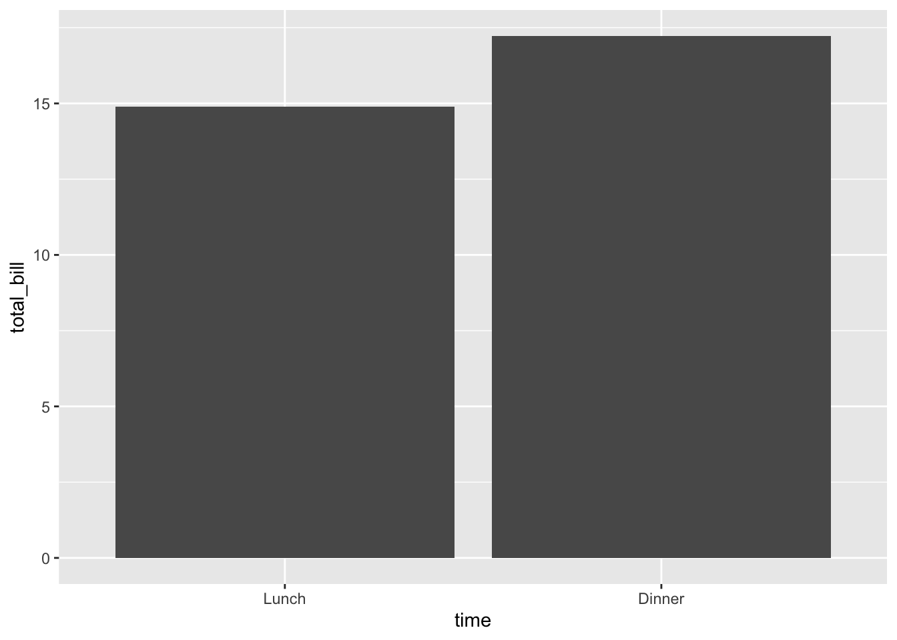
# 按时间填充颜色
ggplot(data = dat, aes(x = time, y = total_bill, fill = time)) +
geom_bar(stat = "identity")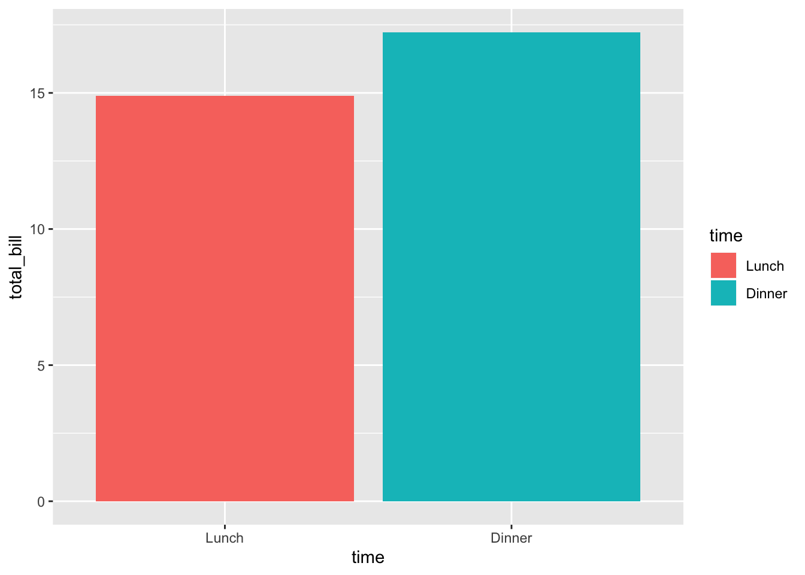
## 这和上面是一样的结果 ggplot(data=dat, aes(x=time,
## y=total_bill)) + geom_bar(aes(fill=time),
## stat='identity') 添加黑色的边框线
ggplot(data = dat, aes(x = time, y = total_bill, fill = time)) +
geom_bar(colour = "black", stat = "identity")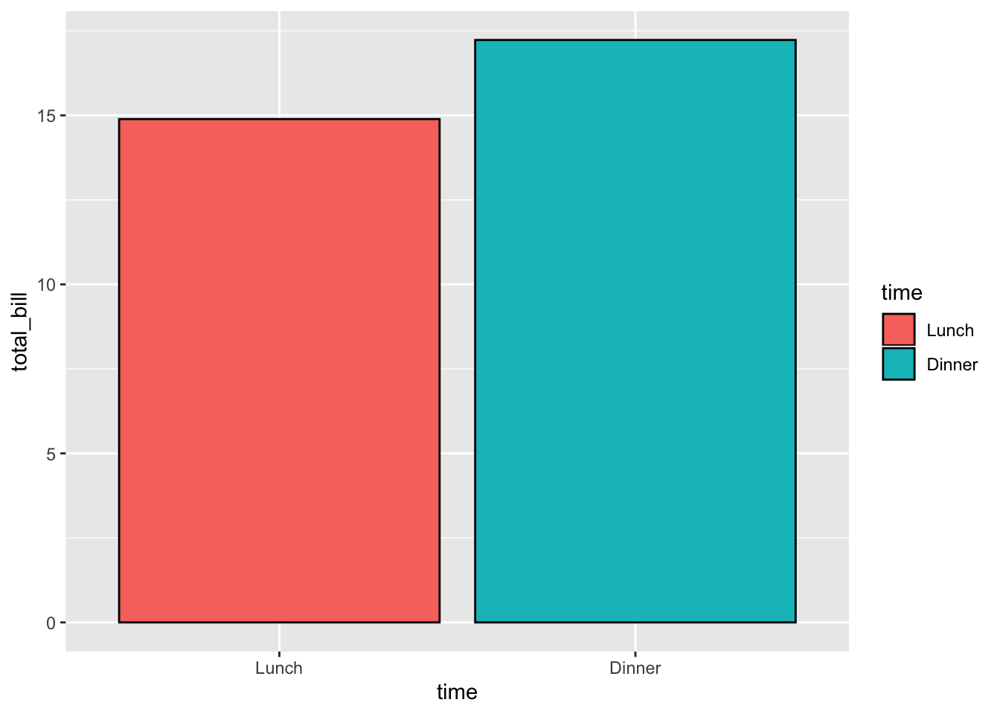
# 没有图例，因为这个信息是多余的
ggplot(data = dat, aes(x = time, y = total_bill, fill = time)) +
geom_bar(colour = "black", stat = "identity") + guides(fill = FALSE)
#> Warning: `guides(<scale> = FALSE)` is deprecated.
#> Please use `guides(<scale> = "none")` instead.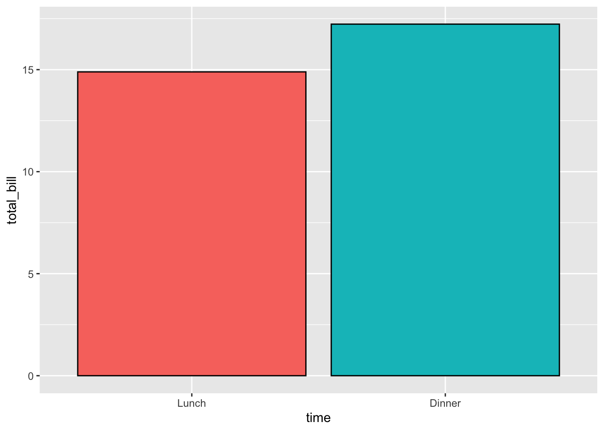
一个理想的条形图可能是下面这样的：
# 添加题目，缩小箱宽，填充颜色，改变轴标签
ggplot(data = dat, aes(x = time, y = total_bill, fill = time)) +
geom_bar(colour = "black", fill = "#DD8888", width = 0.8,
stat = "identity") + guides(fill = FALSE) + xlab("Time of day") +
ylab("Total bill") + ggtitle("Average bill for 2 people")
#> Warning: `guides(<scale> = FALSE)` is deprecated.
#> Please use `guides(<scale> = "none")` instead.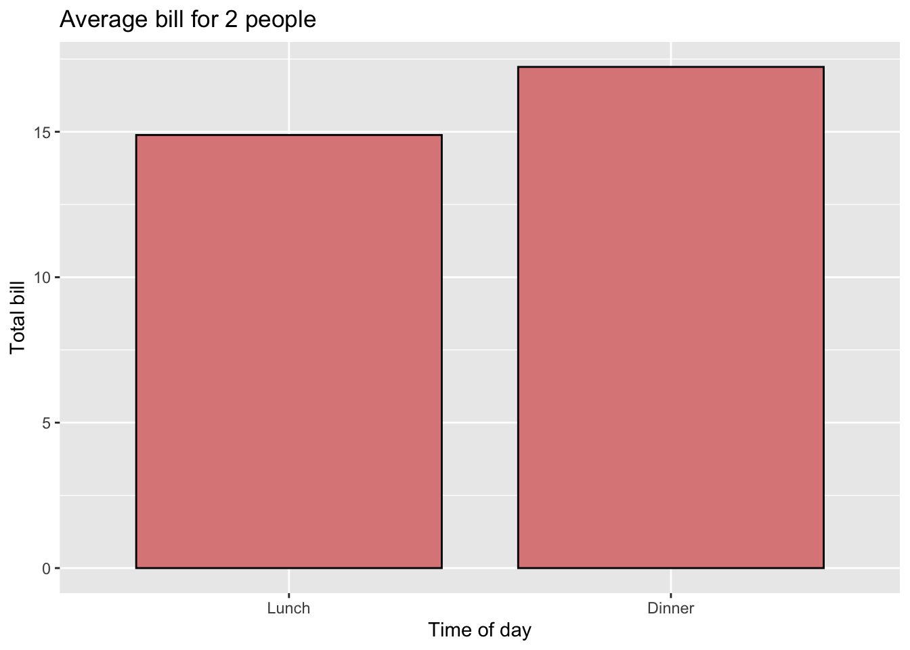
查看颜色获取更多关于颜色的信息。
9.1.2.1.2 计数的条形图
在下面例子中，条形高度代表事件的计数。
我们直接使用 reshape2 的 tips 数据集。
library(reshape2)
# 查看头几行
head(tips)
#> total_bill tip sex smoker day time size
#> 1 16.99 1.01 Female No Sun Dinner 2
#> 2 10.34 1.66 Male No Sun Dinner 3
#> 3 21.01 3.50 Male No Sun Dinner 3
#> 4 23.68 3.31 Male No Sun Dinner 2
#> 5 24.59 3.61 Female No Sun Dinner 4
#> 6 25.29 4.71 Male No Sun Dinner 4想要得到一个计数的条形图，不要映射变量到 y，使用 stat="bin" (默认就是这个) 而不是 stat="identity":
# 计数的条形图
ggplot(data = tips, aes(x = day)) + geom_bar(stat = "count")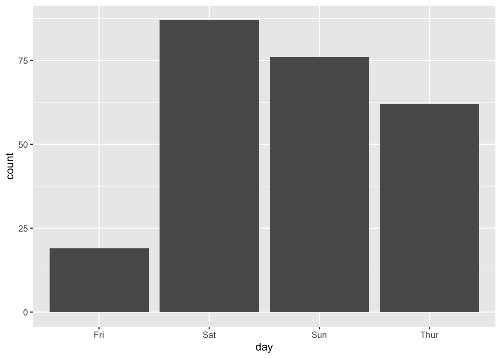
## 和上面等同, 因为 stat='bin' 是默认
## ggplot(data=tips, aes(x=day)) + geom_bar()9.1.2.2 线图
对于线图，数据点必须分组从而 R 知道怎么连接这些点。如果只有一组的话，非常简单，设定 group=1 即可，如果是多组，需要设定分组变量。
下面是使用的映射变量：
time: x 轴total_bill: y 轴
# 基本的线图
ggplot(data = dat, aes(x = time, y = total_bill, group = 1)) +
geom_line()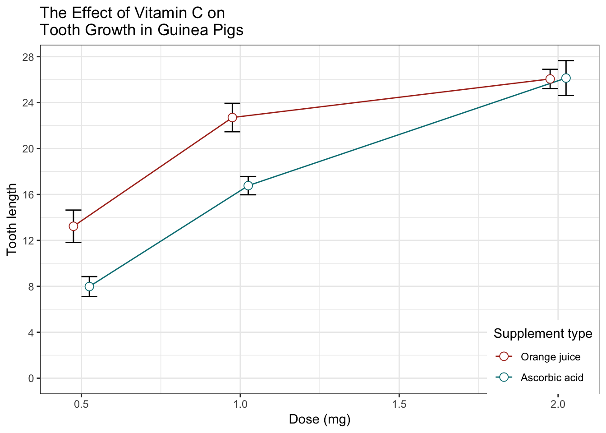
## 与上面结果一致 ggplot(data=dat, aes(x=time,
## y=total_bill)) + geom_line(aes(group=1)) 添加点
ggplot(data = dat, aes(x = time, y = total_bill, group = 1)) +
geom_line() + geom_point()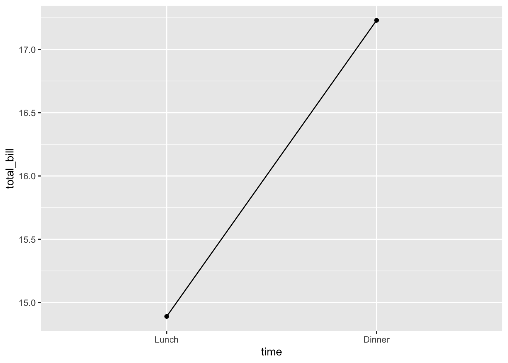
# 改变线和点的颜色
# 改变线的类型和点的类型，用更粗的线、更大的点
# 用红色填充点
ggplot(data = dat, aes(x = time, y = total_bill, group = 1)) +
geom_line(colour = "red", linetype = "dashed", size = 1.5) +
geom_point(colour = "red", size = 4, shape = 21, fill = "white")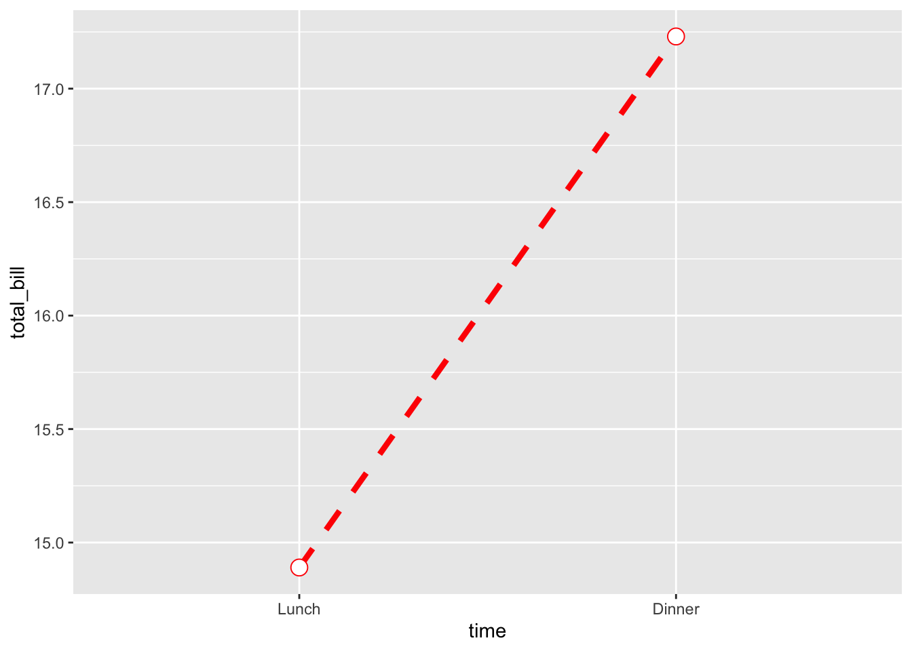
理想的线图可能像下面这样：
# 设定 y 轴的范围 改变轴标签
ggplot(data = dat, aes(x = time, y = total_bill, group = 1)) +
geom_line() + geom_point() + expand_limits(y = 0) +
xlab("Time of day") + ylab("Total bill") + ggtitle("Average bill for 2 people")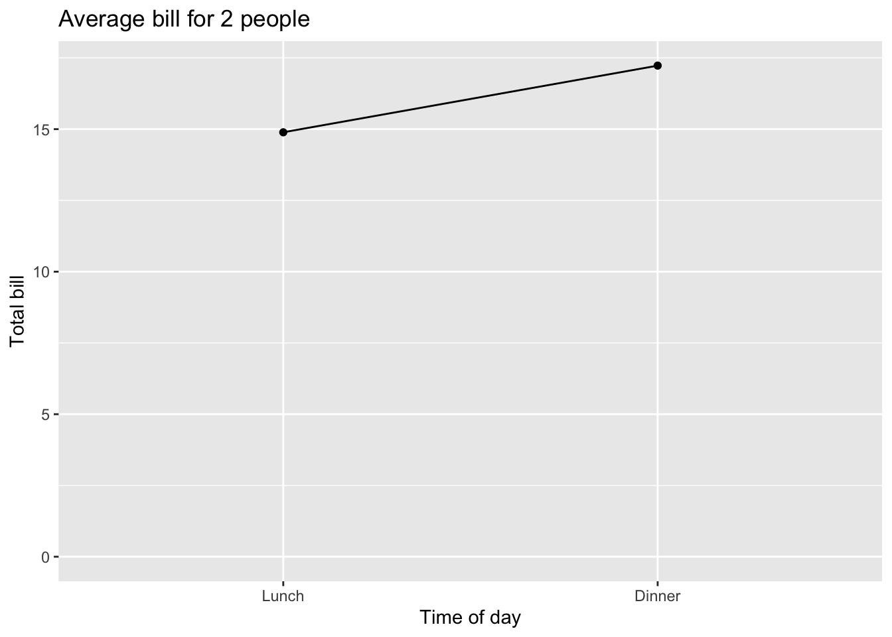
9.1.3 有更多变量的图
下面这个数据将用于接下来的例子
dat1 <- data.frame(sex = factor(c("Female", "Female", "Male",
"Male")), time = factor(c("Lunch", "Dinner", "Lunch",
"Dinner"), levels = c("Lunch", "Dinner")), total_bill = c(13.53,
16.81, 16.24, 17.42))
dat1
#> sex time total_bill
#> 1 Female Lunch 13.53
#> 2 Female Dinner 16.81
#> 3 Male Lunch 16.24
#> 4 Male Dinner 17.429.1.3.1 条形图
变量映射：
time: x 轴sex: 颜色填充total_bill: y 轴
# 堆积条形图 -- 不常用
ggplot(data = dat1, aes(x = time, y = total_bill, fill = sex)) +
geom_bar(stat = "identity")
# 条形图，x 轴是 time, 颜色填充是 sex
ggplot(data = dat1, aes(x = time, y = total_bill, fill = sex)) +
geom_bar(stat = "identity", position = position_dodge())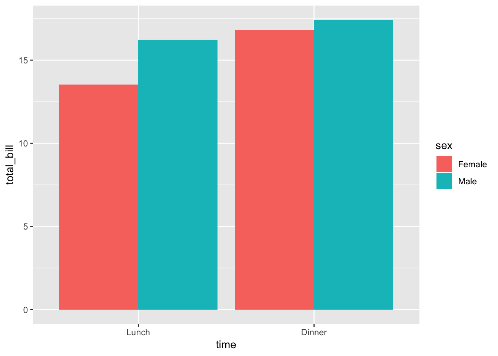
ggplot(data = dat1, aes(x = time, y = total_bill, fill = sex)) +
geom_bar(stat = "identity", position = position_dodge(),
colour = "black")
# 改变颜色
ggplot(data = dat1, aes(x = time, y = total_bill, fill = sex)) +
geom_bar(stat = "identity", position = position_dodge(),
colour = "black") + scale_fill_manual(values = c("#999999",
"#E69F00"))
改变映射是非常容易的：
# 条形图，x 轴是性别，颜色是时间
ggplot(data = dat1, aes(x = sex, y = total_bill, fill = time)) +
geom_bar(stat = "identity", position = position_dodge(),
colour = "black")
查看颜色获取更多关于颜色的信息。
9.1.3.2 线图
变量映射：
time: x 轴sex: 线的颜色total_bill: y 轴
想要绘制多条线，必须指定分组变量，否则所有点都将通过一条线进行连接。在这个例子中，我们希望通过性别来进行分组。
# 基本的带点线图
ggplot(data = dat1, aes(x = time, y = total_bill, group = sex)) +
geom_line() + geom_point()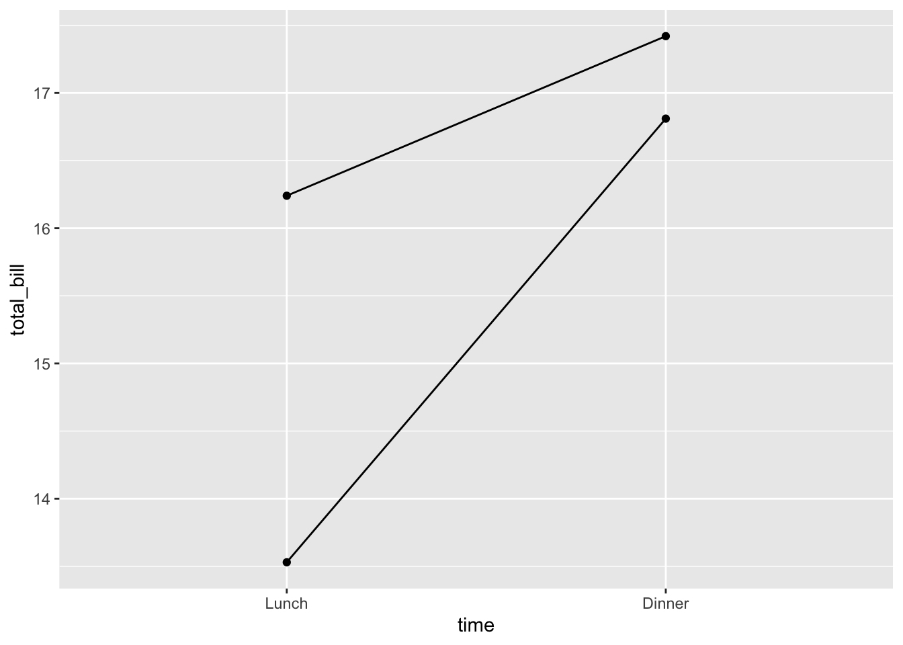
# 将性别映射到颜色
ggplot(data = dat1, aes(x = time, y = total_bill, group = sex,
colour = sex)) + geom_line() + geom_point()
# 映射性别到不同的点类型
ggplot(data = dat1, aes(x = time, y = total_bill, group = sex,
shape = sex)) + geom_line() + geom_point()
# 使用更粗的线、更大的点
ggplot(data = dat1, aes(x = time, y = total_bill, group = sex,
shape = sex)) + geom_line(size = 1.5) + geom_point(size = 3,
fill = "white") + scale_shape_manual(values = c(22,
21))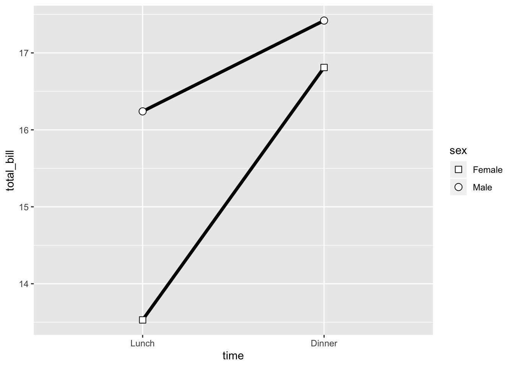
更改颜色和线型变量的映射非常容易：
ggplot(data = dat1, aes(x = sex, y = total_bill, group = time,
shape = time, color = time)) + geom_line() + geom_point()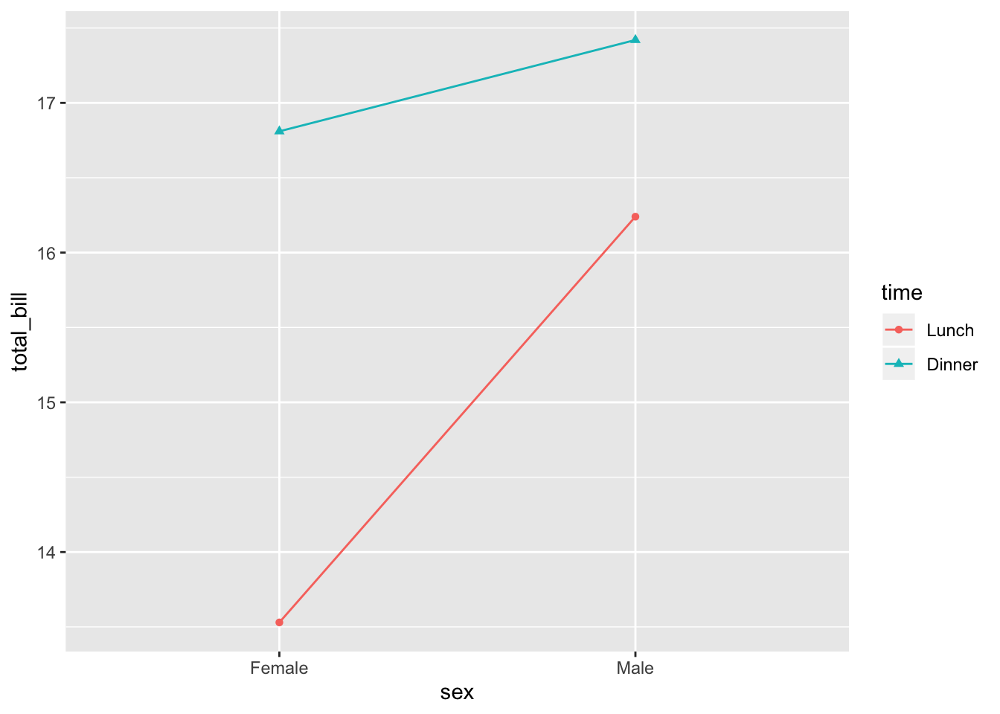
9.1.3.3 完成的例子
完成的例子可能像下面这样：
# 一个条形图
ggplot(data=dat1, aes(x=time, y=total_bill, fill=sex)) +
geom_bar(colour="black", stat="identity",
position=position_dodge(),
size=.3) + # 更粗的线
scale_fill_hue(name="Sex of payer") + # 设定图例标题
xlab("Time of day") + ylab("Total bill") + # 设定轴标签
ggtitle("Average bill for 2 people") + # 设定题目
theme_bw()
# 一个线图
ggplot(data=dat1, aes(x=time, y=total_bill, group=sex, shape=sex, colour=sex)) +
geom_line(aes(linetype=sex), size=1) + # 按性别设定线型
geom_point(size=3, fill="white") + # 使用更大的点，并用颜色填充
expand_limits(y=0) + # 将 0 包含仅 y 轴
scale_colour_hue(name="Sex of payer", # 设定图例标题
l=30) + # 使用更深的颜色 (lightness=30)
scale_shape_manual(name="Sex of payer",
values=c(22,21)) + #
scale_linetype_discrete(name="Sex of payer") +
xlab("Time of day") + ylab("Total bill") + # 设定轴标签
ggtitle("Average bill for 2 people") + # 设定标题
theme_bw() +
theme(legend.position=c(.7, .4)) # 图例的位置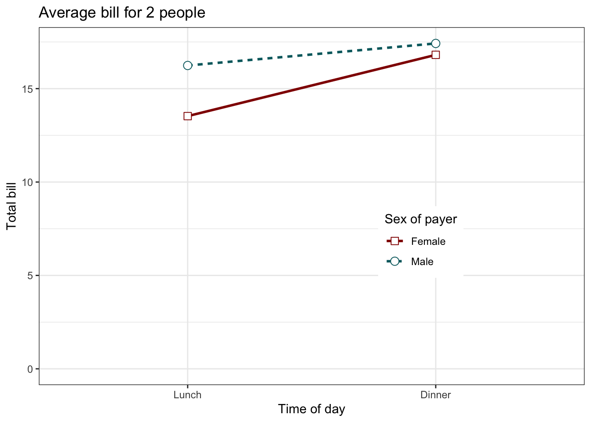
为了保证上图的图例一致，必须指定 3 次。至于为何如此，查看图例。
9.1.4 使用数值 x-axis
当 x 轴上的变量是数字时，有时需要将其视为连续变量，有时需要将其视为分类变量。在该数据集中，剂量应该是值为 0.5, 1.0 和 2.0 的数值变量。作图时，将这些值视为相同类别可能很有用。
datn <- read.table(header = TRUE, text = "
supp dose length
OJ 0.5 13.23
OJ 1.0 22.70
OJ 2.0 26.06
VC 0.5 7.98
VC 1.0 16.77
VC 2.0 26.14
")来自 ToothGrowth 数据集。
9.1.4.1 x-axis 作为连续变量
一个简单的图形可能会将剂量放在 x 轴，这种方式可以绘制一个线图。
ggplot(data = datn, aes(x = dose, y = length, group = supp,
colour = supp)) + geom_line() + geom_point()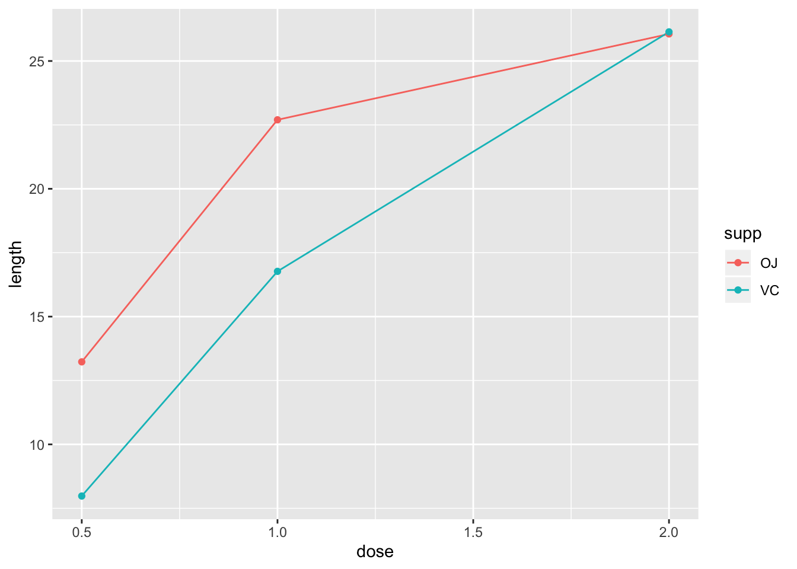
9.1.4.2 x-axis 作为分类变量
首先，我们要将该变量转换为因子。
# 拷贝数据框并将它转换为因子
datn2 <- datn
datn2$dose <- factor(datn2$dose)
ggplot(data = datn2, aes(x = dose, y = length, group = supp,
colour = supp)) + geom_line() + geom_point()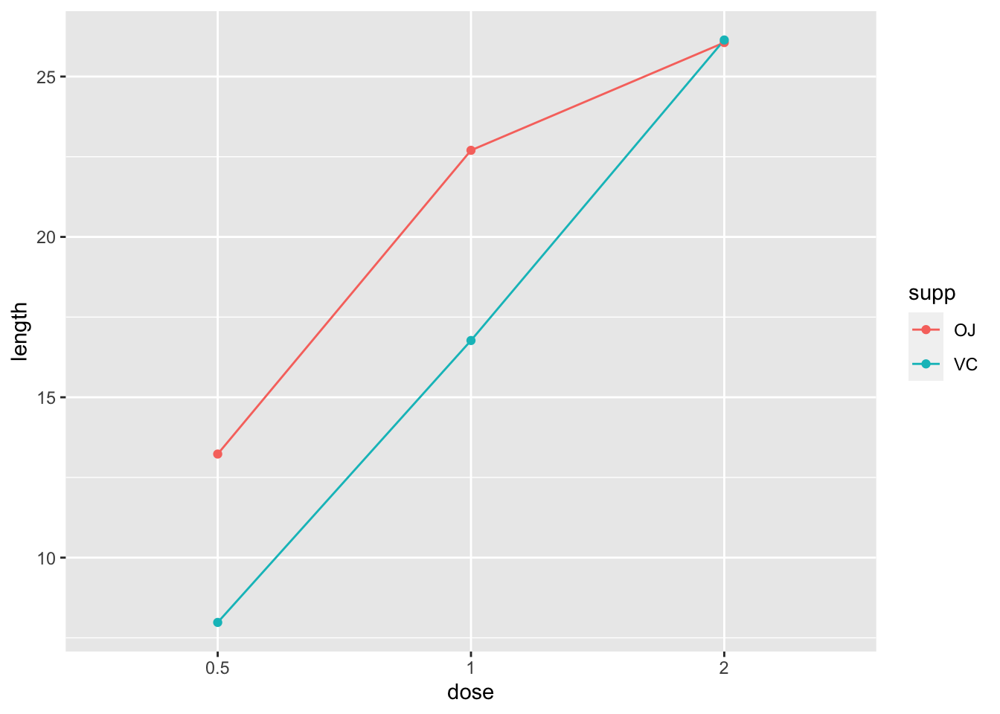
# 使用原始的数据框，但使用 factor 函数在绘图时转换
ggplot(data = datn, aes(x = factor(dose), y = length, group = supp,
colour = supp)) + geom_line() + geom_point()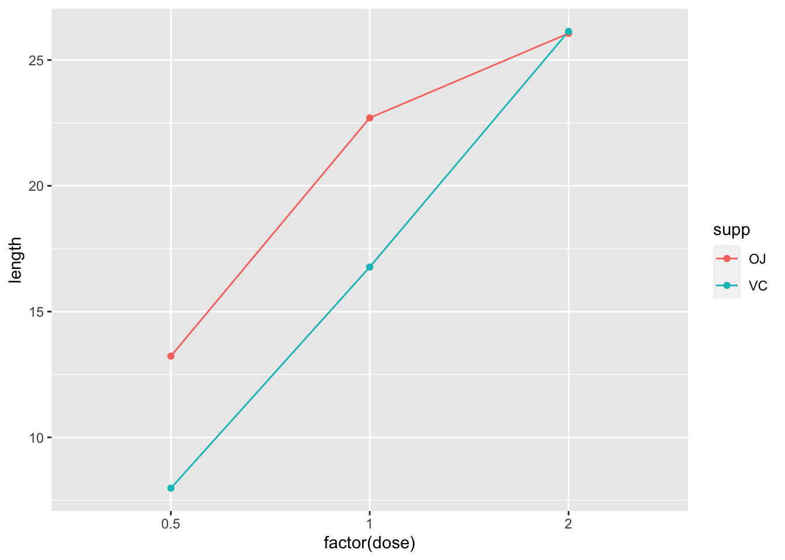
当连续值作为分类变量使用时，也可以绘制条形图。
ggplot(data = datn2, aes(x = dose, y = length, fill = supp)) +
geom_bar(stat = "identity", position = position_dodge())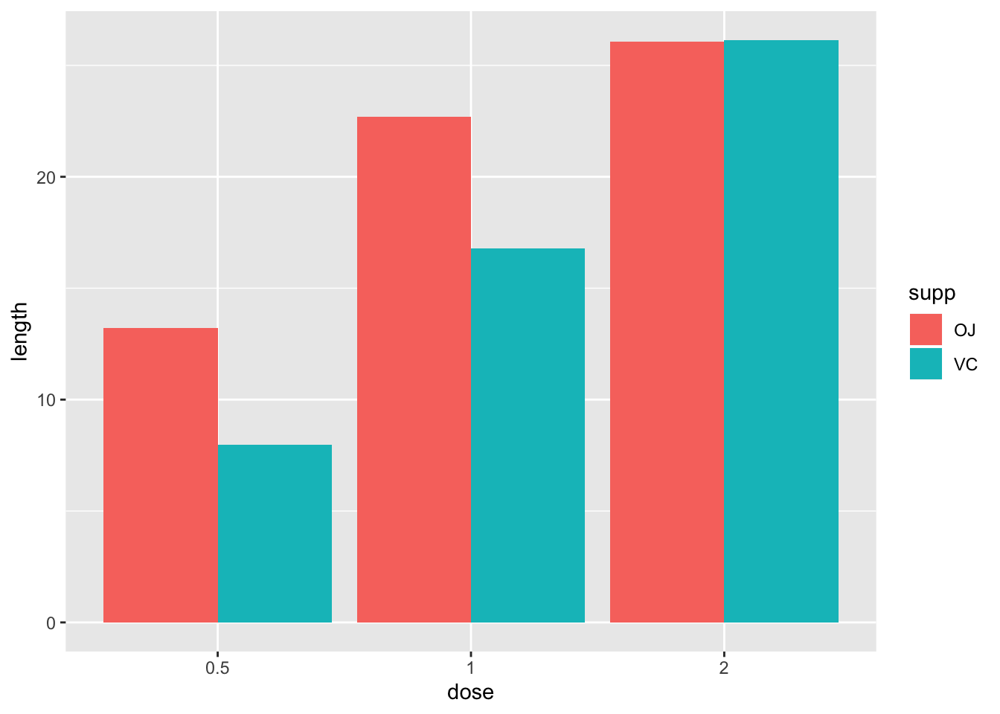
ggplot(data = datn, aes(x = factor(dose), y = length, fill = supp)) +
geom_bar(stat = "identity", position = position_dodge())
9.2 绘制均值和误差线
9.2.1 问题
你想要为一个数据集绘制均值的误差线。
9.2.2 方案
想要用 ggplot2 绘制图形，数据必须是数据框形式，而且是长格式（相对于宽格式）。如果你的数据需要重构，请参考长宽格式转换获取更多信息。
9.2.2.1 助手函数
如果你处理的仅仅是组间变量，那么 summarySE() 是你代码中唯一需要使用的函数。如果你的数据里有组内变量，并且你想要矫正误差线使得组间的变异被移除，就像 Loftus and Masson (1994) 里的那样，那么 normDataWithin() 和 summarySEwithin() 这两个函数必须加入你的代码中，然后调用 summarySEwithin() 函数进行计算。
## Gives count, mean, standard deviation, standard
## error of the mean, and confidence interval (default
## 95%). data: a data frame. measurevar: the name of
## a column that contains the variable to be
## summariezed groupvars: a vector containing names of
## columns that contain grouping variables na.rm: a
## boolean that indicates whether to ignore NA's
## conf.interval: the percent range of the confidence
## interval (default is 95%)
summarySE <- function(data = NULL, measurevar, groupvars = NULL,
na.rm = FALSE, conf.interval = 0.95, .drop = TRUE) {
library(plyr)
# New version of length which can handle NA's: if
# na.rm==T, don't count them
length2 <- function(x, na.rm = FALSE) {
if (na.rm)
sum(!is.na(x)) else length(x)
}
# This does the summary. For each group's data
# frame, return a vector with N, mean, and sd
datac <- ddply(data, groupvars, .drop = .drop, .fun = function(xx,
col) {
c(N = length2(xx[[col]], na.rm = na.rm), mean = mean(xx[[col]],
na.rm = na.rm), sd = sd(xx[[col]], na.rm = na.rm))
}, measurevar)
# Rename the 'mean' column
datac <- rename(datac, c(mean = measurevar))
datac$se <- datac$sd/sqrt(datac$N) # Calculate standard error of the mean
# Confidence interval multiplier for standard error
# Calculate t-statistic for confidence interval:
# e.g., if conf.interval is .95, use .975
# (above/below), and use df=N-1
ciMult <- qt(conf.interval/2 + 0.5, datac$N - 1)
datac$ci <- datac$se * ciMult
return(datac)
}
## Norms the data within specified groups in a data
## frame; it normalizes each subject (identified by
## idvar) so that they have the same mean, within each
## group specified by betweenvars. data: a data
## frame. idvar: the name of a column that identifies
## each subject (or matched subjects) measurevar: the
## name of a column that contains the variable to be
## summariezed betweenvars: a vector containing names
## of columns that are between-subjects variables
## na.rm: a boolean that indicates whether to ignore
## NA's
normDataWithin <- function(data = NULL, idvar, measurevar,
betweenvars = NULL, na.rm = FALSE, .drop = TRUE) {
library(plyr)
# Measure var on left, idvar + between vars on right
# of formula.
data.subjMean <- ddply(data, c(idvar, betweenvars),
.drop = .drop, .fun = function(xx, col, na.rm) {
c(subjMean = mean(xx[, col], na.rm = na.rm))
}, measurevar, na.rm)
# Put the subject means with original data
data <- merge(data, data.subjMean)
# Get the normalized data in a new column
measureNormedVar <- paste(measurevar, "_norm", sep = "")
data[, measureNormedVar] <- data[, measurevar] - data[,
"subjMean"] + mean(data[, measurevar], na.rm = na.rm)
# Remove this subject mean column
data$subjMean <- NULL
return(data)
}
## Summarizes data, handling within-subjects variables
## by removing inter-subject variability. It will
## still work if there are no within-S variables.
## Gives count, un-normed mean, normed mean (with same
## between-group mean), standard deviation, standard
## error of the mean, and confidence interval. If
## there are within-subject variables, calculate
## adjusted values using method from Morey (2008).
## data: a data frame. measurevar: the name of a
## column that contains the variable to be summariezed
## betweenvars: a vector containing names of columns
## that are between-subjects variables withinvars: a
## vector containing names of columns that are
## within-subjects variables idvar: the name of a
## column that identifies each subject (or matched
## subjects) na.rm: a boolean that indicates whether
## to ignore NA's conf.interval: the percent range of
## the confidence interval (default is 95%)
summarySEwithin <- function(data = NULL, measurevar, betweenvars = NULL,
withinvars = NULL, idvar = NULL, na.rm = FALSE, conf.interval = 0.95,
.drop = TRUE) {
# Ensure that the betweenvars and withinvars are
# factors
factorvars <- vapply(data[, c(betweenvars, withinvars),
drop = FALSE], FUN = is.factor, FUN.VALUE = logical(1))
if (!all(factorvars)) {
nonfactorvars <- names(factorvars)[!factorvars]
message("Automatically converting the following non-factors to factors: ",
paste(nonfactorvars, collapse = ", "))
data[nonfactorvars] <- lapply(data[nonfactorvars],
factor)
}
# Get the means from the un-normed data
datac <- summarySE(data, measurevar, groupvars = c(betweenvars,
withinvars), na.rm = na.rm, conf.interval = conf.interval,
.drop = .drop)
# Drop all the unused columns (these will be
# calculated with normed data)
datac$sd <- NULL
datac$se <- NULL
datac$ci <- NULL
# Norm each subject's data
ndata <- normDataWithin(data, idvar, measurevar, betweenvars,
na.rm, .drop = .drop)
# This is the name of the new column
measurevar_n <- paste(measurevar, "_norm", sep = "")
# Collapse the normed data - now we can treat
# between and within vars the same
ndatac <- summarySE(ndata, measurevar_n, groupvars = c(betweenvars,
withinvars), na.rm = na.rm, conf.interval = conf.interval,
.drop = .drop)
# Apply correction from Morey (2008) to the standard
# error and confidence interval Get the product of
# the number of conditions of within-S variables
nWithinGroups <- prod(vapply(ndatac[, withinvars, drop = FALSE],
FUN = nlevels, FUN.VALUE = numeric(1)))
correctionFactor <- sqrt(nWithinGroups/(nWithinGroups -
1))
# Apply the correction factor
ndatac$sd <- ndatac$sd * correctionFactor
ndatac$se <- ndatac$se * correctionFactor
ndatac$ci <- ndatac$ci * correctionFactor
# Combine the un-normed means with the normed
# results
merge(datac, ndatac)
}9.2.2.2 示例数据
下面的示例将使用 ToothGrowth 数据集。注意 dose 在这里是一个数值列，一些情况下我们将它转换为因子变量将会更加有用。
tg <- ToothGrowth
head(tg)
#> len supp dose
#> 1 4.2 VC 0.5
#> 2 11.5 VC 0.5
#> 3 7.3 VC 0.5
#> 4 5.8 VC 0.5
#> 5 6.4 VC 0.5
#> 6 10.0 VC 0.5
library(ggplot2)首先，我们必须对数据进行统计汇总。 这可以通过多种方式实现，参阅汇总数据。在这个案例中，我们将使用 summarySE() 函数( 确保summarySE() 函数的代码在使用前已经键入)。
# install.packages('Rmisc')
library(Rmisc)
#> 载入需要的程辑包：lattice
#> 载入需要的程辑包：plyr
#>
#> 载入程辑包：'Rmisc'
#> The following objects are masked _by_ '.GlobalEnv':
#>
#> normDataWithin, summarySE, summarySEwithin
# summarySE 函数提供了标准差、标准误以及 95%
# 的置信区间
tgc <- summarySE(tg, measurevar = "len", groupvars = c("supp",
"dose"))
tgc
#> supp dose N len sd se ci
#> 1 OJ 0.5 10 13.23 4.460 1.4103 3.190
#> 2 OJ 1.0 10 22.70 3.911 1.2368 2.798
#> 3 OJ 2.0 10 26.06 2.655 0.8396 1.899
#> 4 VC 0.5 10 7.98 2.747 0.8686 1.965
#> 5 VC 1.0 10 16.77 2.515 0.7954 1.799
#> 6 VC 2.0 10 26.14 4.798 1.5172 3.4329.2.2.3 线图
数据统计总结后，我们就可以开始绘制图形了。这里是一些带误差线的线图和点图，误差线代表标准差、标准误或者是 95% 的置信区间。
# 均值的标准误
ggplot(tgc, aes(x = dose, y = len, colour = supp)) + geom_errorbar(aes(ymin = len -
se, ymax = len + se), width = 0.1) + geom_line() + geom_point()
# 发现误差线重叠（dose=2.0），我们使用 position_dodge
# 将它们进行水平移动
pd <- position_dodge(0.1) # move them .05 to the left and right
ggplot(tgc, aes(x = dose, y = len, colour = supp)) + geom_errorbar(aes(ymin = len -
se, ymax = len + se), width = 0.1, position = pd) +
geom_line(position = pd) + geom_point(position = pd)
# 使用 95% 置信区间替换标准误
ggplot(tgc, aes(x = dose, y = len, colour = supp)) + geom_errorbar(aes(ymin = len -
ci, ymax = len + ci), width = 0.1, position = pd) +
geom_line(position = pd) + geom_point(position = pd)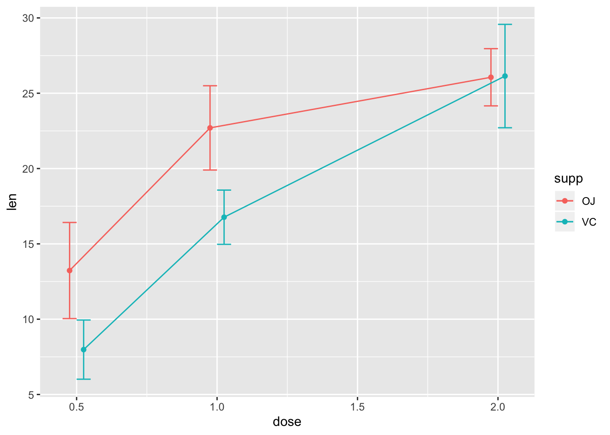
# 黑色的误差线 - 注意 'group=supp' 的映射 --
# 没有它，误差线将不会避开（就是会重叠）。
ggplot(tgc, aes(x = dose, y = len, colour = supp, group = supp)) +
geom_errorbar(aes(ymin = len - ci, ymax = len + ci),
colour = "black", width = 0.1, position = pd) +
geom_line(position = pd) + geom_point(position = pd,
size = 3)
一张完成的带误差线（代表均值的标准误）的图形可能像下面显示的那样。最后画点，这样白色将会在线和误差线的上面（这个需要理解图层概念，顺序不同展示的效果是不一样的）。
ggplot(tgc, aes(x=dose, y=len, colour=supp, group=supp)) +
geom_errorbar(aes(ymin=len-se, ymax=len+se), colour="black", width=.1, position=pd) +
geom_line(position=pd) +
geom_point(position=pd, size=3, shape=21, fill="white") + # 21的填充的圆
xlab("Dose (mg)") +
ylab("Tooth length") +
scale_colour_hue(name="Supplement type", # 图例标签使用暗色
breaks=c("OJ", "VC"),
labels=c("Orange juice", "Ascorbic acid"),
l=40) + # 使用暗色，亮度为40
ggtitle("The Effect of Vitamin C on\nTooth Growth in Guinea Pigs") +
expand_limits(y=0) + # 扩展范围
scale_y_continuous(breaks=0:20*4) + # 每4个单位设置标记（y轴）
theme_bw() +
theme(legend.justification=c(1,0),
legend.position=c(1,0)) # 右下方放置图例
9.2.2.4 条形图
条形图绘制误差线也非常相似。 注意 tgc$dose 必须是一个因子。如果它是一个数值向量，将会不起作用。
# 将dose转换为因子变量
tgc2 <- tgc
tgc2$dose <- factor(tgc2$dose)
# 误差线代表了均值的标准误
ggplot(tgc2, aes(x=dose, y=len, fill=supp)) +
geom_bar(position=position_dodge(), stat="identity") +
geom_errorbar(aes(ymin=len-se, ymax=len+se),
width=.2, # 误差线的宽度
position=position_dodge(.9))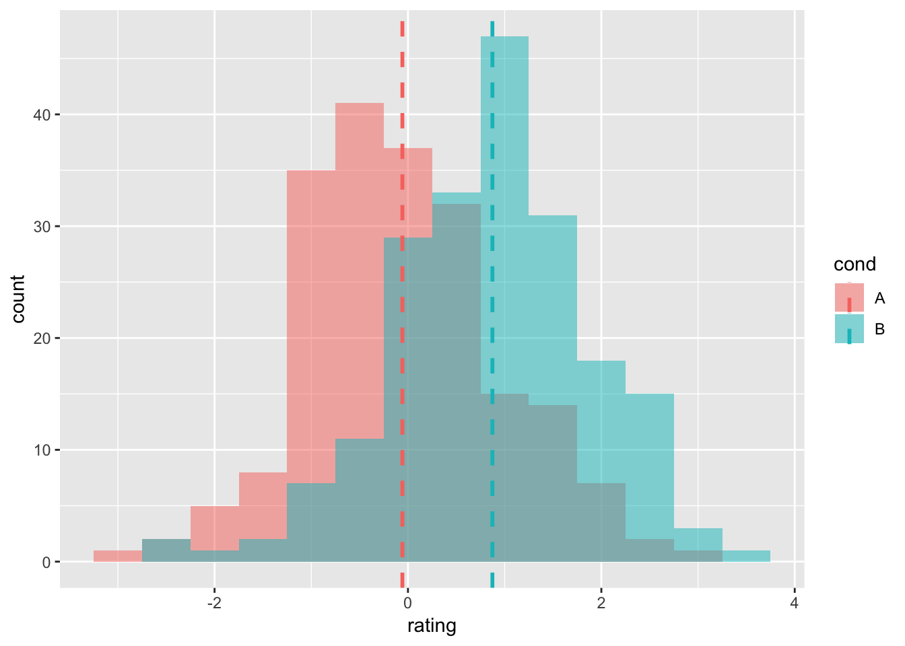
# 使用95%的置信区间替换标准误
ggplot(tgc2, aes(x=dose, y=len, fill=supp)) +
geom_bar(position=position_dodge(), stat="identity") +
geom_errorbar(aes(ymin=len-ci, ymax=len+ci),
width=.2, # 误差线的宽度
position=position_dodge(.9))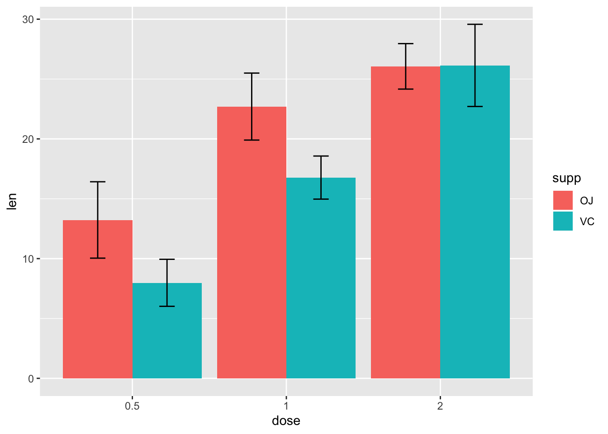
一张绘制完成的图片像下面这样：
ggplot(tgc2, aes(x=dose, y=len, fill=supp)) +
geom_bar(position=position_dodge(), stat="identity",
colour="black", # 使用黑色边框,
size=.3) + # 将线变细
geom_errorbar(aes(ymin=len-se, ymax=len+se),
size=.3, # 将线变细
width=.2,
position=position_dodge(.9)) +
xlab("Dose (mg)") +
ylab("Tooth length") +
scale_fill_hue(name="Supplement type", # Legend label, use darker colors
breaks=c("OJ", "VC"),
labels=c("Orange juice", "Ascorbic acid")) +
ggtitle("The Effect of Vitamin C on\nTooth Growth in Guinea Pigs") +
scale_y_continuous(breaks=0:20*4) +
theme_bw()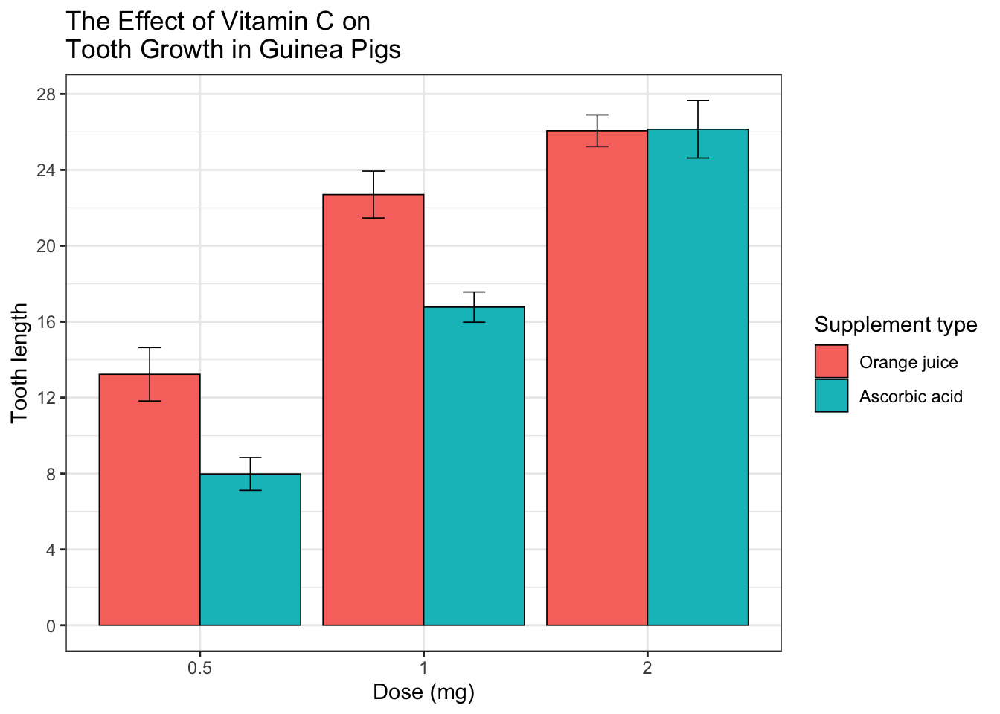
9.2.2.5 为组内变量添加误差线
当所有的变量都属于不同组别时，我们画标准误或者置信区间会显得非常简单直观。然而，当我们描绘的是组内变量（重复测量），那么添加标准误或者通常的置信区间可能会对不同条件下差异的推断产生误导作用。
下面的方法来自 Morey (2008)，它是对 Cousineau (2005)的矫正，而它所做的就是 提供比 Loftus and Masson (1994)更简单的方法。 你可以查看这些文章，以获得更多对组内变量误差线问题的详细探讨和方案。
这里有一个组内变量的数据集 (来自 Morey 2008)，包含 pre/post-test。
dfw <- read.table(header = TRUE, text = "
subject pretest posttest
1 59.4 64.5
2 46.4 52.4
3 46.0 49.7
4 49.0 48.7
5 32.5 37.4
6 45.2 49.5
7 60.3 59.9
8 54.3 54.1
9 45.4 49.6
10 38.9 48.5
")
# 将物体的 ID 作为因子变量对待
dfw$subject <- factor(dfw$subject)第一步是将该数据集转换为长格式，参见长宽格式数据互换获取更多信息。
# 转换为长格式
library(reshape2)
dfw_long <- melt(dfw, id.vars = "subject", measure.vars = c("pretest",
"posttest"), variable.name = "condition")
dfw_long
#> subject condition value
#> 1 1 pretest 59.4
#> 2 2 pretest 46.4
#> 3 3 pretest 46.0
#> 4 4 pretest 49.0
#> 5 5 pretest 32.5
#> 6 6 pretest 45.2
#> 7 7 pretest 60.3
#> 8 8 pretest 54.3
#> 9 9 pretest 45.4
#> 10 10 pretest 38.9
#> 11 1 posttest 64.5
#> 12 2 posttest 52.4
#> 13 3 posttest 49.7
#> 14 4 posttest 48.7
#> 15 5 posttest 37.4
#> 16 6 posttest 49.5
#> 17 7 posttest 59.9
#> 18 8 posttest 54.1
#> 19 9 posttest 49.6
#> 20 10 posttest 48.5使用 summarySEwithin() 函数拆解数据。
dfwc <- summarySEwithin(dfw_long, measurevar = "value",
withinvars = "condition", idvar = "subject", na.rm = FALSE,
conf.interval = 0.95)
dfwc
#> condition N value value_norm sd se ci
#> 1 posttest 10 51.43 51.43 2.262 0.7154 1.618
#> 2 pretest 10 47.74 47.74 2.262 0.7154 1.618
library(ggplot2)
# 创建带 95% 置信区间的图形
ggplot(dfwc, aes(x = condition, y = value, group = 1)) +
geom_line() + geom_errorbar(width = 0.1, aes(ymin = value -
ci, ymax = value + ci)) + geom_point(shape = 21, size = 3,
fill = "white") + ylim(40, 60)
value 和 value_norm 列代表了未标准化和标准化后的值。
9.2.2.6 理解组内变量的误差线
这部分解释组内的误差线值是如何计算出来的。这些步骤仅作解释目的；它们对于绘制误差线是非必需的。
下面独立数据的图形结果展示了组内变量 condition 存在连续一致的趋势，但使用常规的标准误（或者置信区间）则不能充分地展示这一点。Morey (2008) 和Cousineau (2005) 的方法本质是标准化数据去移除组间的变化，计算出这个标准化数据的变异程度。
# 使用一致的 y 轴范围
ymax <- max(dfw_long$value)
ymin <- min(dfw_long$value)
# 绘制个体数据
ggplot(dfw_long, aes(x = condition, y = value, colour = subject,
group = subject)) + geom_line() + geom_point(shape = 21,
fill = "white") + ylim(ymin, ymax)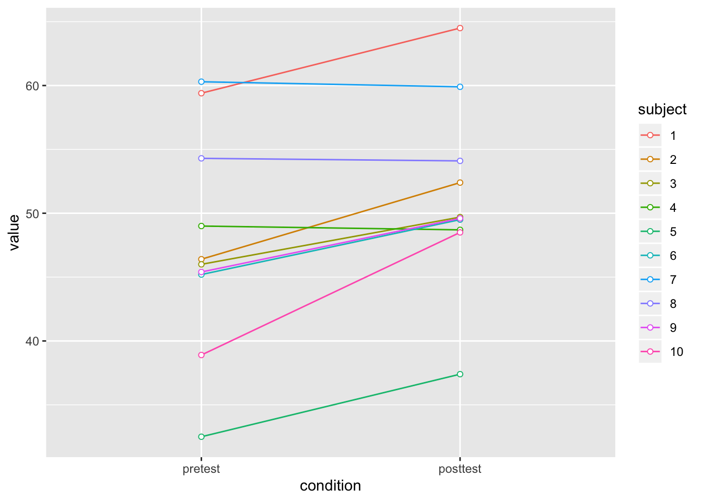
# 创造标准化的版本
dfwNorm.long <- normDataWithin(data = dfw_long, idvar = "subject",
measurevar = "value")
# 绘制标准化的个体数据
ggplot(dfwNorm.long, aes(x = condition, y = value_norm,
colour = subject, group = subject)) + geom_line() +
geom_point(shape = 21, fill = "white") + ylim(ymin,
ymax)
针对正常（组间）方法和组内方法的误差线差异在下面呈现。正常的方法计算出的误差线用红色表示，组内方法的误差线用黑色表示。
# Instead of summarySEwithin, use summarySE, which
# treats condition as though it were a
# between-subjects variable
dfwc_between <- summarySE(data = dfw_long, measurevar = "value",
groupvars = "condition", na.rm = FALSE, conf.interval = 0.95)
dfwc_between
#> condition N value sd se ci
#> 1 pretest 10 47.74 8.599 2.719 6.151
#> 2 posttest 10 51.43 7.254 2.294 5.189
# 用红色显示组间的置信区间，用黑色展示组内的置信区间
ggplot(dfwc_between, aes(x = condition, y = value, group = 1)) +
geom_line() + geom_errorbar(width = 0.1, aes(ymin = value -
ci, ymax = value + ci), colour = "red") + geom_errorbar(width = 0.1,
aes(ymin = value - ci, ymax = value + ci), data = dfwc) +
geom_point(shape = 21, size = 3, fill = "white") + ylim(ymin,
ymax)
9.2.2.7 两个组内变量
如果存在超过一个的组内变量，我们可以使用相同的函数 summarySEwithin。下面的数据集来自 Hays (1994)，在 Rouder and Morey (2005) 中用来绘制这类的组内误差线。
data <- read.table(header = TRUE, text = "
Subject RoundMono SquareMono RoundColor SquareColor
1 41 40 41 37
2 57 56 56 53
3 52 53 53 50
4 49 47 47 47
5 47 48 48 47
6 37 34 35 36
7 47 50 47 46
8 41 40 38 40
9 48 47 49 45
10 37 35 36 35
11 32 31 31 33
12 47 42 42 42
")数据集首先必须转换为长格式，列名显示了两个变量： 形状 (圆形/方形) 和配色方案 (黑白/有色)。
# 转换为长格式
library(reshape2)
data_long <- melt(data = data, id.var = "Subject", measure.vars = c("RoundMono",
"SquareMono", "RoundColor", "SquareColor"), variable.name = "Condition")
names(data_long)[names(data_long) == "value"] <- "Time"
# 拆分 Condition 列为 Shape 和 ColorScheme
data_long$Shape <- NA
data_long$Shape[grepl("^Round", data_long$Condition)] <- "Round"
data_long$Shape[grepl("^Square", data_long$Condition)] <- "Square"
data_long$Shape <- factor(data_long$Shape)
data_long$ColorScheme <- NA
data_long$ColorScheme[grepl("Mono$", data_long$Condition)] <- "Monochromatic"
data_long$ColorScheme[grepl("Color$", data_long$Condition)] <- "Colored"
data_long$ColorScheme <- factor(data_long$ColorScheme, levels = c("Monochromatic",
"Colored"))
# 删除 Condition 列
data_long$Condition <- NULL
# 检查数据
head(data_long)
#> Subject Time Shape ColorScheme
#> 1 1 41 Round Monochromatic
#> 2 2 57 Round Monochromatic
#> 3 3 52 Round Monochromatic
#> 4 4 49 Round Monochromatic
#> 5 5 47 Round Monochromatic
#> 6 6 37 Round Monochromatic现在可以进行统计汇总和绘图了。
datac <- summarySEwithin(data_long, measurevar = "Time",
withinvars = c("Shape", "ColorScheme"), idvar = "Subject")
datac
#> Shape ColorScheme N Time Time_norm sd se
#> 1 Round Colored 12 43.58 43.58 1.212 0.3500
#> 2 Round Monochromatic 12 44.58 44.58 1.331 0.3844
#> 3 Square Colored 12 42.58 42.58 1.462 0.4219
#> 4 Square Monochromatic 12 43.58 43.58 1.261 0.3641
#> ci
#> 1 0.7703
#> 2 0.8460
#> 3 0.9287
#> 4 0.8014
library(ggplot2)
ggplot(datac, aes(x = Shape, y = Time, fill = ColorScheme)) +
geom_bar(position = position_dodge(0.9), colour = "black",
stat = "identity") + geom_errorbar(position = position_dodge(0.9),
width = 0.25, aes(ymin = Time - ci, ymax = Time + ci)) +
coord_cartesian(ylim = c(40, 46)) + scale_fill_manual(values = c("#CCCCCC",
"#FFFFFF")) + scale_y_continuous(breaks = seq(1:100)) +
theme_bw() + geom_hline(yintercept = 38)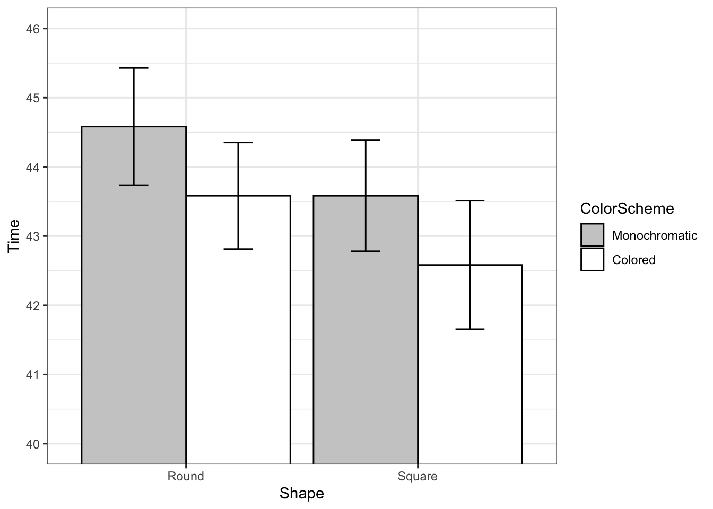
9.2.2.8 注意标准化的均值
函数 summarySEWithin() 返回标准化和未标准化的均值。未标准化的均值只是简单地表示每组的均值。标准化的均值计算出来保证组间的均值是一样的。
比如：
dat <- read.table(header = TRUE, text = "
id trial gender dv
A 0 male 2
A 1 male 4
B 0 male 6
B 1 male 8
C 0 female 22
C 1 female 24
D 0 female 26
D 1 female 28
")
# 标准化和未标准化的均值是不同的
summarySEwithin(dat, measurevar = "dv", withinvars = "trial",
betweenvars = "gender", idvar = "id")
#> Automatically converting the following non-factors to factors: gender, trial
#> gender trial N dv dv_norm sd se ci
#> 1 female 0 2 24 14 0 0 0
#> 2 female 1 2 26 16 0 0 0
#> 3 male 0 2 4 14 0 0 0
#> 4 male 1 2 6 16 0 0 09.2.3 其他
解决问题的方法不止作者提供的这一种，为了理解 ggplot2 是如何进行误差线的计算和添加，我在 stackoverflow 上提交了一个关于 ggplot2 使用 SE 还是 SD 作为默认误差线的问题。有人就给出了快速简易的解答。回答者的共同观点是必须先进行数据的统计计算。我之前在其他博客上看到使用 stat_boxplot(geom="errorbar", width=.3) 直接计算误差线可能就有问题（难以解释它算的是 SD 还是 SE）。
9.3 分布图
9.3.1 问题
你想要绘制一组数据的分布图。
9.3.2 方案
后面的例子中会使用以下这组简单的数据：
set.seed(1234)
dat <- data.frame(cond = factor(rep(c("A", "B"), each = 200)),
rating = c(rnorm(200), rnorm(200, mean = 0.8)))
# 查看数据
head(dat)
#> cond rating
#> 1 A -1.2071
#> 2 A 0.2774
#> 3 A 1.0844
#> 4 A -2.3457
#> 5 A 0.4291
#> 6 A 0.5061
library(ggplot2)9.3.2.1 直方图和概率密度图
qplot() 函数能够用更简单的语法绘制出与 ggplot() 相同的图像。然而，在实践过程中你会发现 ggplot() 是更好的选择，因为 qplot() 中很多参数的选项都会让人感到困惑。
# 以 rating 为横轴绘制直方图，组距设为 0.5
# 两种函数都可以绘制出相同的图:
ggplot(dat, aes(x=rating)) + geom_histogram(binwidth=.5)
# qplot(dat$rating, binwidth=.5)
# 绘制黑色边线，白色填充的图
ggplot(dat, aes(x=rating)) +
geom_histogram(binwidth=.5, colour="black", fill="white")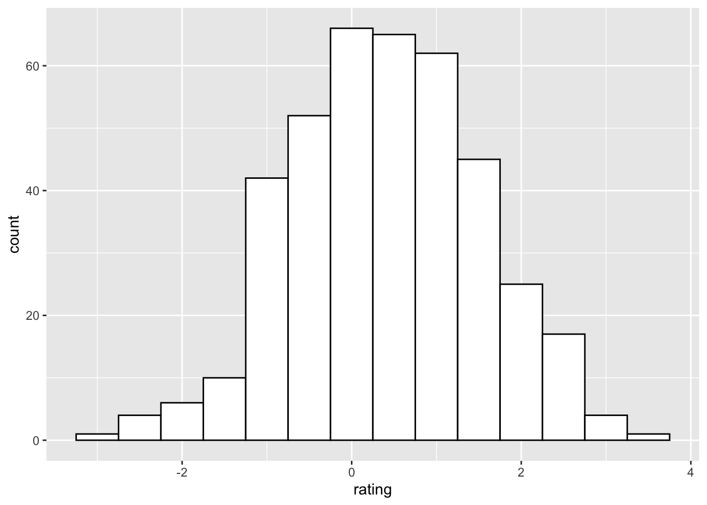
# 密度曲线
ggplot(dat, aes(x=rating)) + geom_density()
# 直方图与核密度曲线重叠
ggplot(dat, aes(x=rating)) +
geom_histogram(aes(y=..density..), # 这里直方图以 density (密度)为y轴
binwidth=.5,
colour="black", fill="white") +
geom_density(alpha=.2, fill="#FF6666") # 重合部分透明填充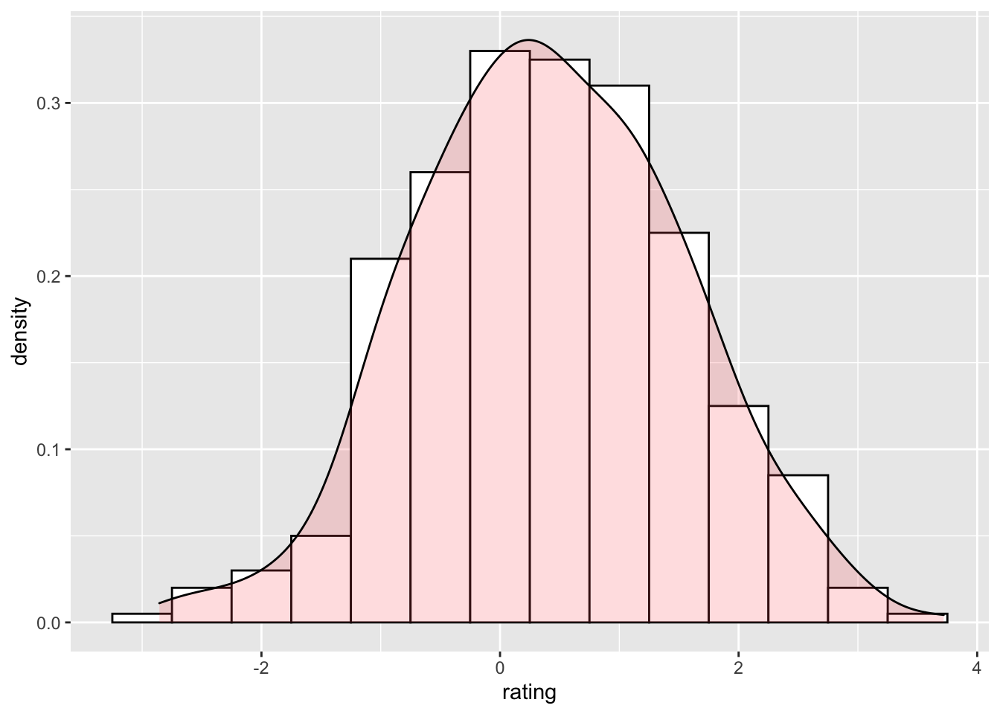
添加一条均值线：
ggplot(dat, aes(x=rating)) +
geom_histogram(binwidth=.5, colour="black", fill="white") +
geom_vline(aes(xintercept=mean(rating, na.rm=T)), # 忽略缺失值
color="red", linetype="dashed", size=1)9.3.2.2 多组数据的直方图和概率密度图
# 重叠直方图
ggplot(dat, aes(x = rating, fill = cond)) + geom_histogram(binwidth = 0.5,
alpha = 0.5, position = "identity") # identity 表示将每个对象直接显示在图中，条形会彼此重叠。
# 间隔直方图
ggplot(dat, aes(x = rating, fill = cond)) + geom_histogram(binwidth = 0.5,
position = "dodge") # dodge 表示将每组的条形依次并列放置。
# 密度图
ggplot(dat, aes(x = rating, colour = cond)) + geom_density()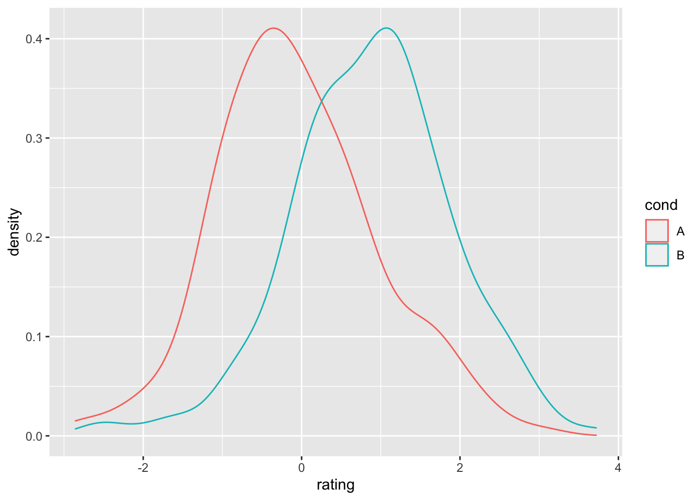
# 半透明填充的密度图
ggplot(dat, aes(x = rating, fill = cond)) + geom_density(alpha = 0.3)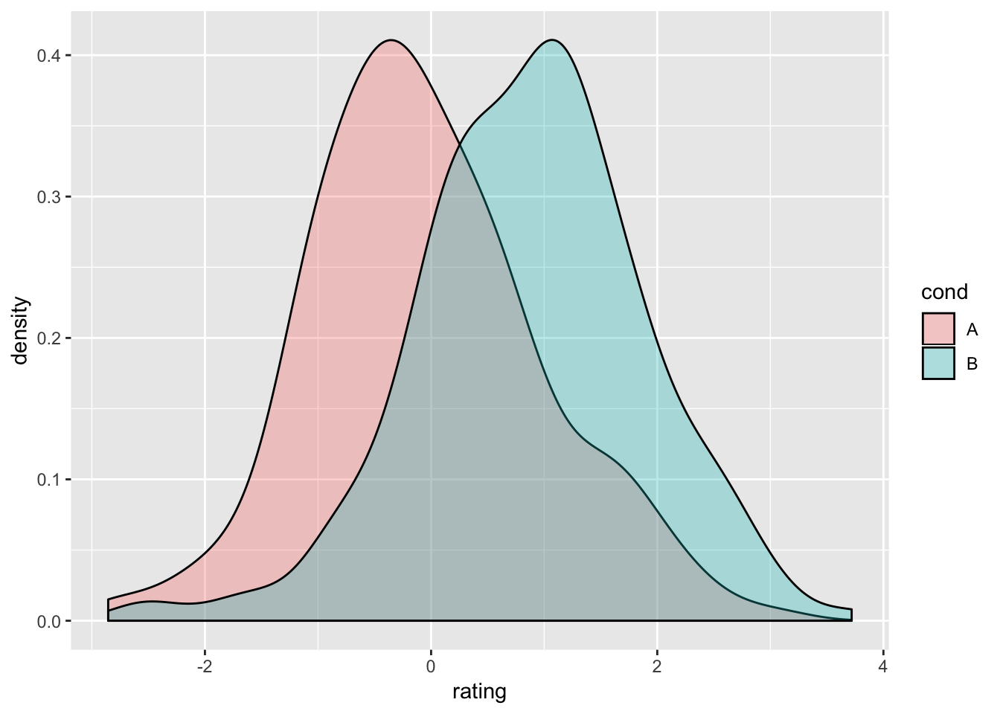
在给每组数据添加均值线前，需要将每组数据的平均值赋值到一个新的数据框。
# 求均值
library(plyr)
cdat <- ddply(dat, "cond", summarise, rating.mean = mean(rating))
cdat
#> cond rating.mean
#> 1 A -0.05776
#> 2 B 0.87325
# 给重叠直方图添加均值线
ggplot(dat, aes(x = rating, fill = cond)) + geom_histogram(binwidth = 0.5,
alpha = 0.5, position = "identity") + geom_vline(data = cdat,
aes(xintercept = rating.mean, colour = cond), linetype = "dashed",
size = 1)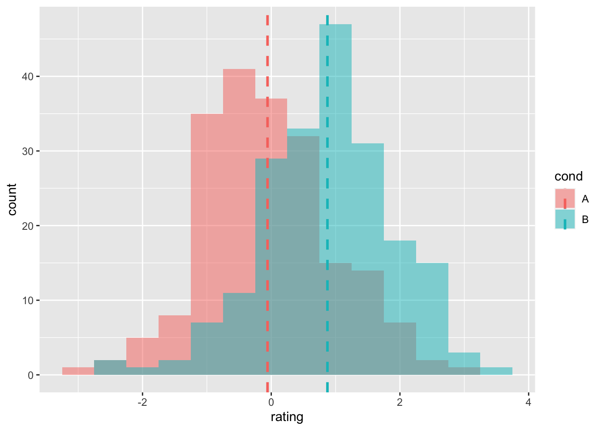
# 给密度图添加均值线
ggplot(dat, aes(x = rating, colour = cond)) + geom_density() +
geom_vline(data = cdat, aes(xintercept = rating.mean,
colour = cond), linetype = "dashed", size = 1)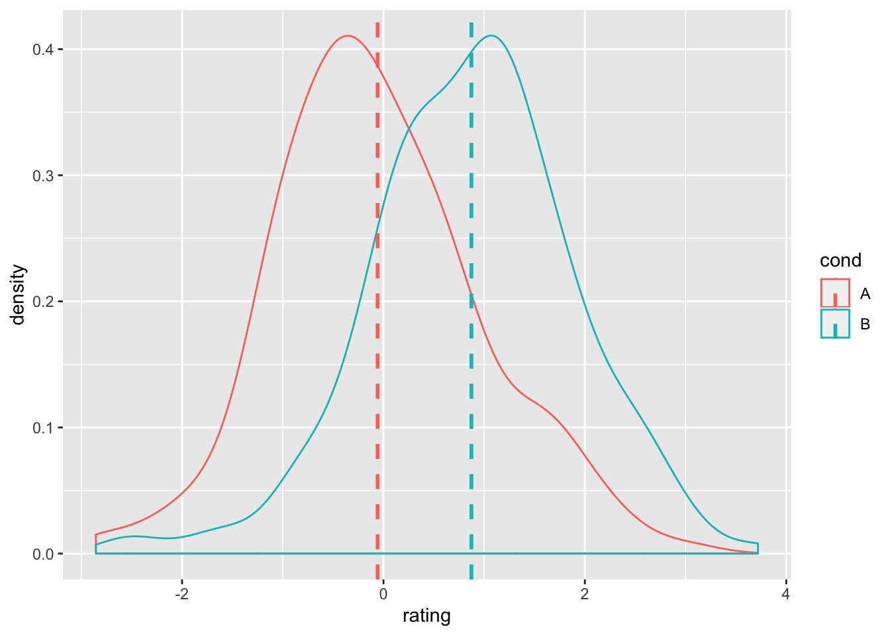
使用分面：
ggplot(dat, aes(x = rating)) + geom_histogram(binwidth = 0.5,
colour = "black", fill = "white") + facet_grid(cond ~
.)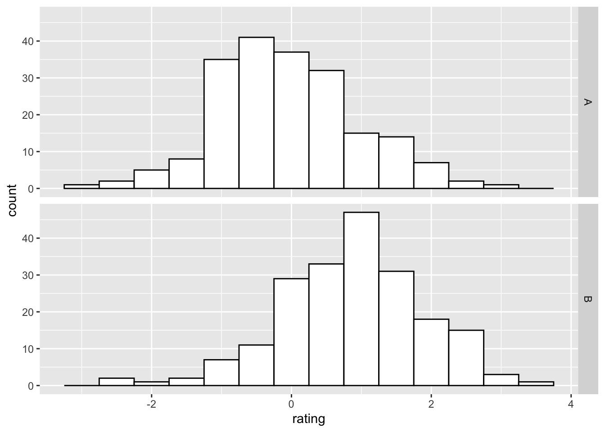
# 使用之前的 cdat 添加均值线
ggplot(dat, aes(x = rating)) + geom_histogram(binwidth = 0.5,
colour = "black", fill = "white") + facet_grid(cond ~
.) + geom_vline(data = cdat, aes(xintercept = rating.mean),
linetype = "dashed", size = 1, colour = "red")
更多关于分面的细节可查看分面
9.3.2.3 箱型图
# 绘制箱型图
ggplot(dat, aes(x = cond, y = rating)) + geom_boxplot()
# 对分组填充颜色
ggplot(dat, aes(x = cond, y = rating, fill = cond)) + geom_boxplot()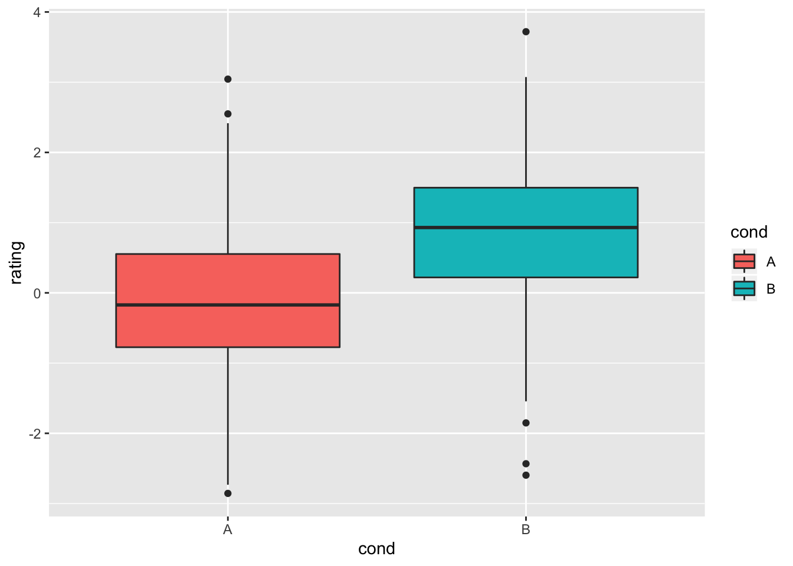
# 将上图中冗余的图例删除掉：
ggplot(dat, aes(x = cond, y = rating, fill = cond)) + geom_boxplot() +
guides(fill = FALSE)
#> Warning: `guides(<scale> = FALSE)` is deprecated.
#> Please use `guides(<scale> = "none")` instead.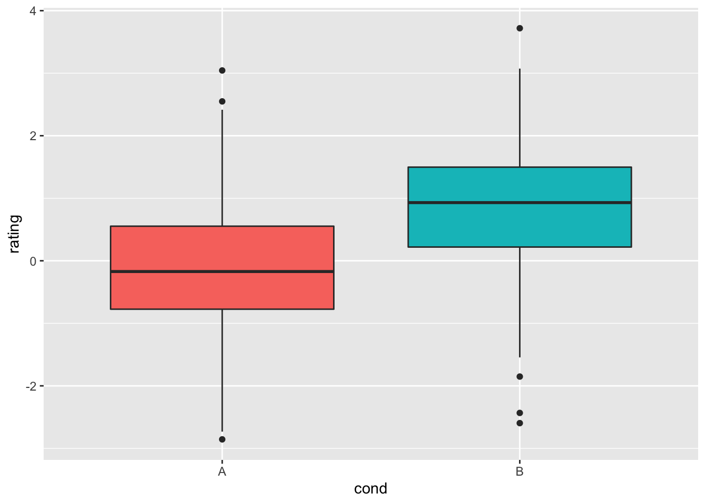
# 坐标轴翻转
ggplot(dat, aes(x = cond, y = rating, fill = cond)) + geom_boxplot() +
guides(fill = FALSE) + coord_flip()
#> Warning: `guides(<scale> = FALSE)` is deprecated.
#> Please use `guides(<scale> = "none")` instead.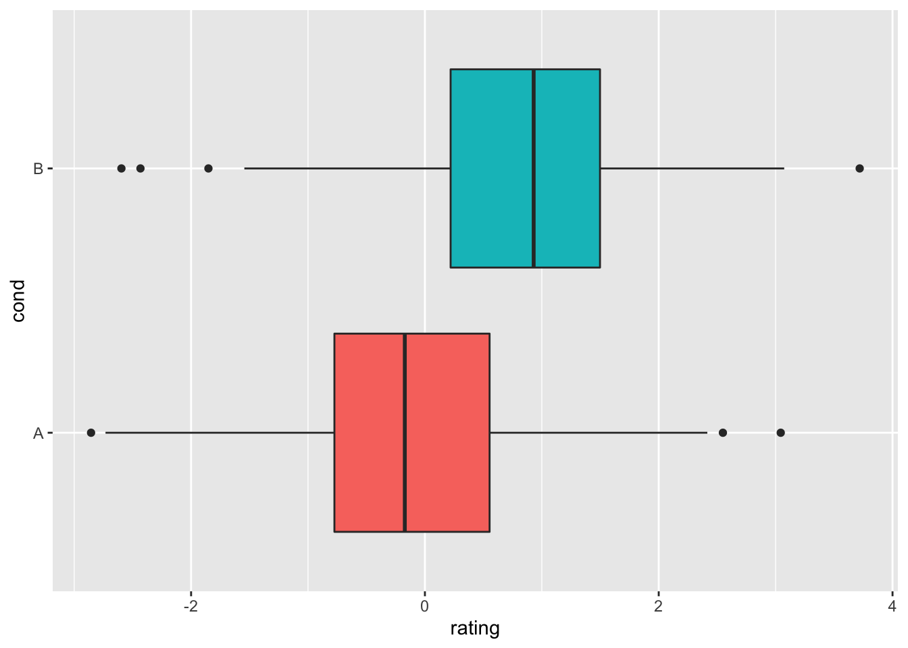
同时可以通过 stat_summary() 来添加平均值。
# 用菱形图标指征平均值，并调整参数使该图标变更大。
ggplot(dat, aes(x = cond, y = rating)) + geom_boxplot() +
stat_summary(fun.y = mean, geom = "point", shape = 5,
size = 4)
#> Warning: `fun.y` is deprecated. Use `fun` instead.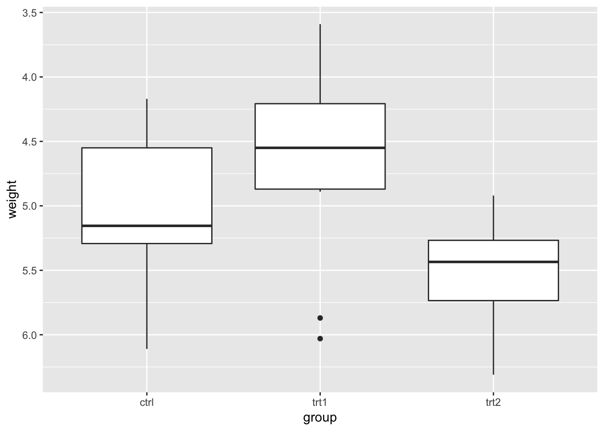
9.4 散点图
9.4.1 问题
你想要绘制一幅散点图。
9.4.2 方案
假设这是你的数据：
set.seed(955)
# 创建一些噪声数据
dat <- data.frame(cond = rep(c("A", "B"), each = 10), xvar = 1:20 +
rnorm(20, sd = 3), yvar = 1:20 + rnorm(20, sd = 3))
head(dat)
#> cond xvar yvar
#> 1 A -4.252 3.47316
#> 2 A 1.702 0.00594
#> 3 A 4.323 -0.09425
#> 4 A 1.781 2.07281
#> 5 A 11.537 1.21544
#> 6 A 6.672 3.60811
library(ggplot2)9.4.2.1 带回归线的基本散点图
ggplot(dat, aes(x=xvar, y=yvar)) +
geom_point(shape=1) # 使用空心圆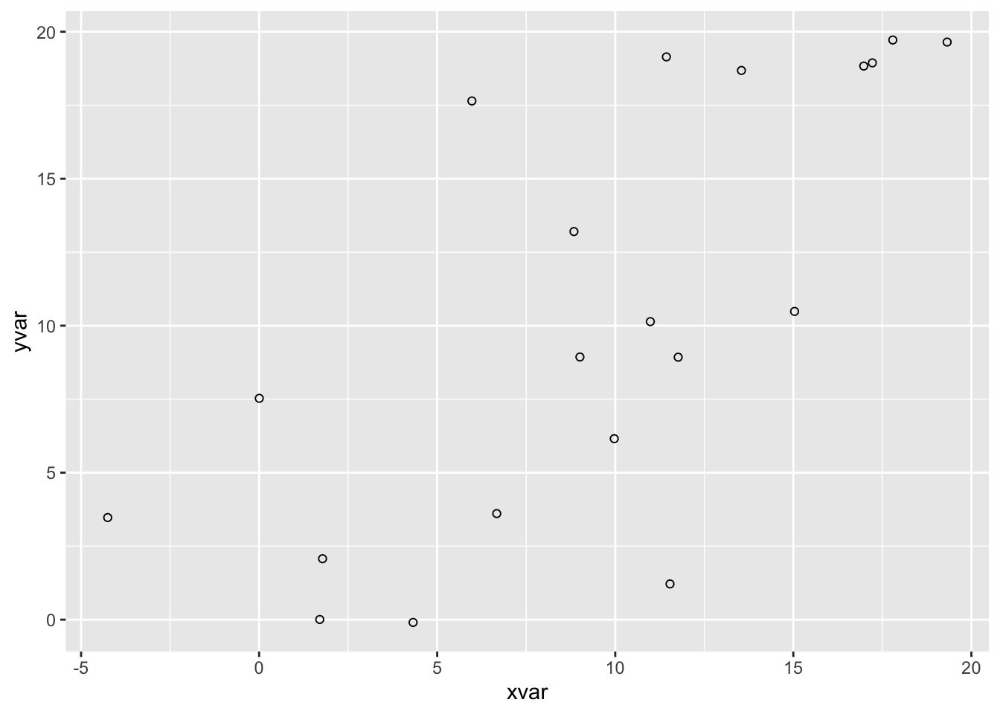
ggplot(dat, aes(x=xvar, y=yvar)) +
geom_point(shape=1) + # 使用空心圆
geom_smooth(method=lm) # 添加回归线
#> `geom_smooth()` using formula 'y ~ x'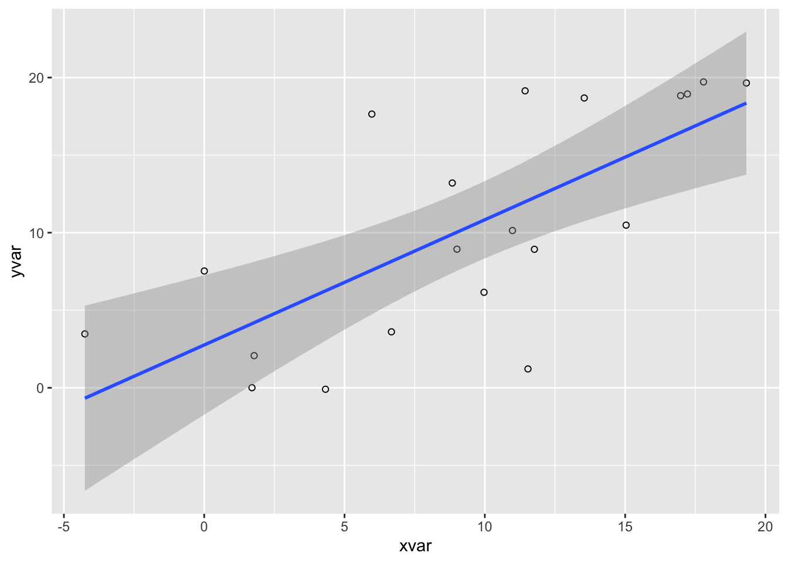
# (默认包含 95% 置信区间)
ggplot(dat, aes(x=xvar, y=yvar)) +
geom_point(shape=1) + # 使用空心圆
geom_smooth(method=lm, # 添加回归线
se=FALSE) # 不加置信区域
#> `geom_smooth()` using formula 'y ~ x'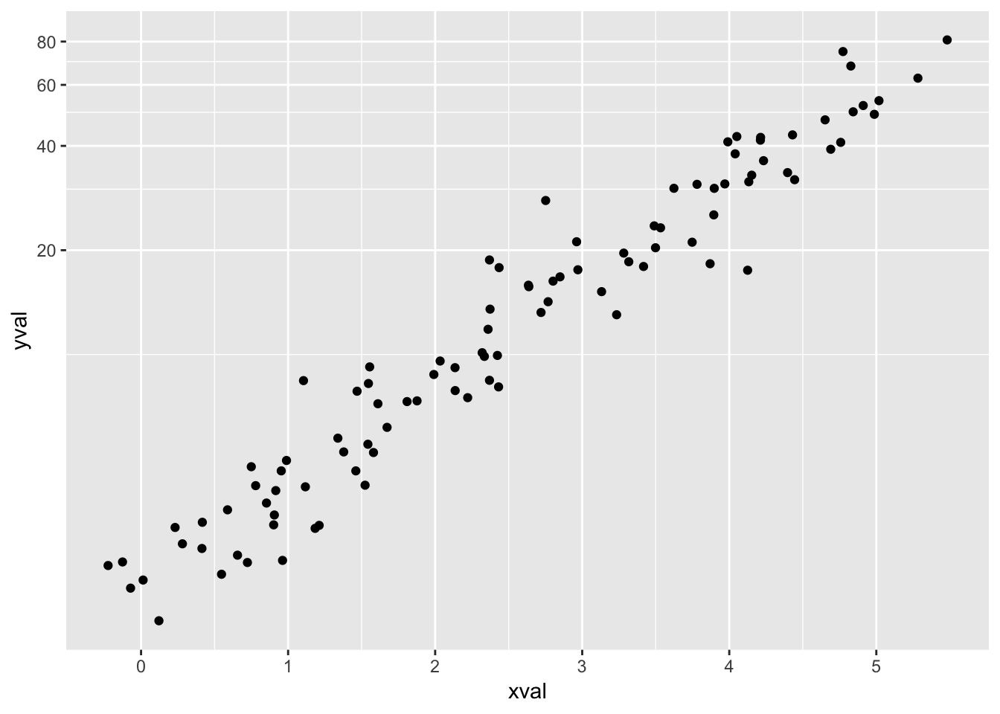
ggplot(dat, aes(x=xvar, y=yvar)) +
geom_point(shape=1) + # 使用空心圆
geom_smooth() # 添加带置信区间的平滑拟合曲线
#> `geom_smooth()` using method = 'loess' and formula 'y ~ x'
9.4.2.2 通过其他变量设置颜色和形状
# 根据 cond 设置颜色
ggplot(dat, aes(x=xvar, y=yvar, color=cond)) + geom_point(shape=1)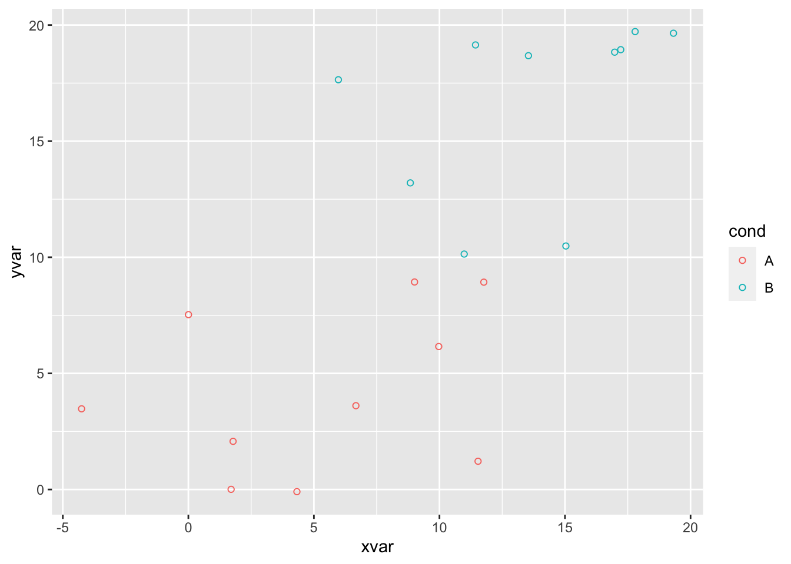
# 同上，但这里带了回归线
ggplot(dat, aes(x=xvar, y=yvar, color=cond)) +
geom_point(shape=1) +
scale_colour_hue(l=50) + # 使用稍暗的调色板
geom_smooth(method=lm,
se=FALSE)
#> `geom_smooth()` using formula 'y ~ x'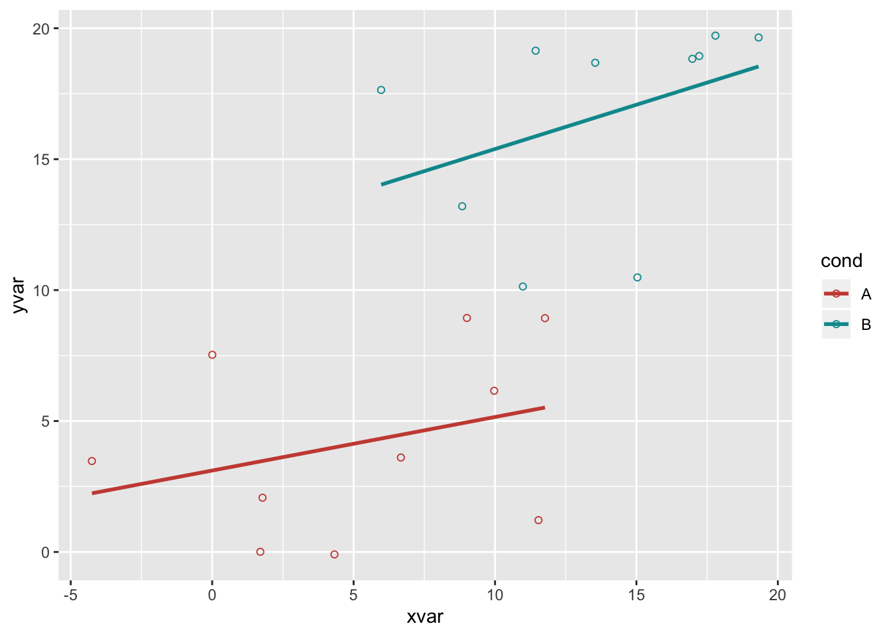
# 拓展回归线到数据区域之外（带预测效果）
ggplot(dat, aes(x=xvar, y=yvar, color=cond)) + geom_point(shape=1) +
scale_colour_hue(l=50) +
geom_smooth(method=lm,
se=FALSE,
fullrange=TRUE)
#> `geom_smooth()` using formula 'y ~ x'
# 根据 cond 设置形状
ggplot(dat, aes(x=xvar, y=yvar, shape=cond)) + geom_point()
# 同上，但形状不同
ggplot(dat, aes(x=xvar, y=yvar, shape=cond)) + geom_point() +
scale_shape_manual(values=c(1,2)) # 使用圆和三角形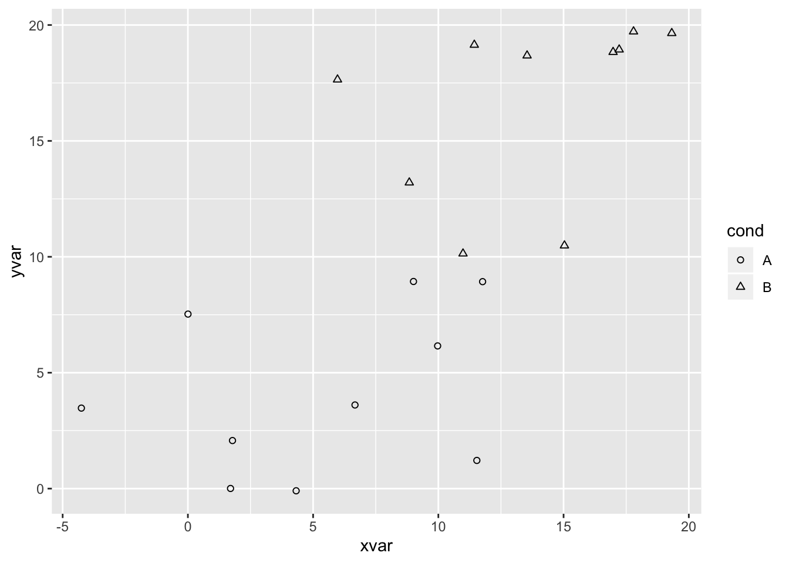
9.4.2.3 处理图像元素叠加
如果你有很多数据点，或者你的数据是离散的，那么数据可能会覆盖到一起，这样就看不清楚同一个位置有多少数据了。
# 取近似值
dat$xrnd <- round(dat$xvar/5) * 5
dat$yrnd <- round(dat$yvar/5) * 5
# 让每个点都部分透明 如果情况严重，可以使用更小的值
ggplot(dat, aes(x = xrnd, y = yrnd)) + geom_point(shape = 19,
alpha = 1/4)
# 抖动点 抖动范围在 x 轴上是 1，y 轴上是 0.5
ggplot(dat, aes(x = xrnd, y = yrnd)) + geom_point(shape = 1,
position = position_jitter(width = 1, height = 0.5))
9.5 标题
9.5.1 问题
你想给图形设定一个标题。
9.5.2 方案
一个不带标题的图形例子：
library(ggplot2)
bp <- ggplot(PlantGrowth, aes(x = group, y = weight)) +
geom_boxplot()
bp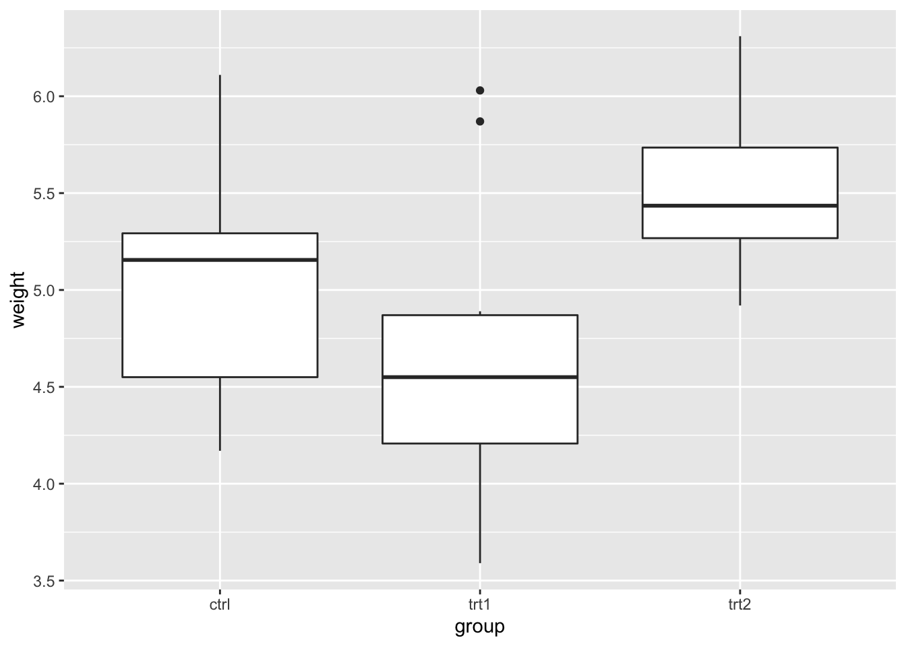
添加标题：
bp + ggtitle("Plant growth")
## 等同于 bp + labs(title='Plant growth')
## 如果标题比较长，可以用 \n 将它分成多行来显示
bp + ggtitle("Plant growth with\ndifferent treatments")
# 缩少行距并使用粗体
bp + ggtitle("Plant growth with\ndifferent treatments") +
theme(plot.title = element_text(lineheight = 0.8, face = "bold"))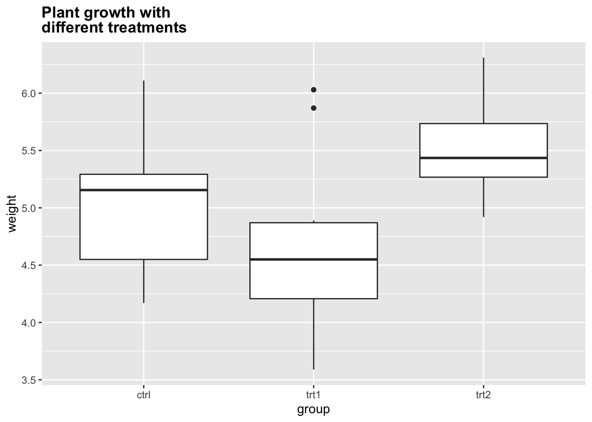
9.6 坐标轴
9.6.1 问题
你想要改变轴的顺序或方向。
9.6.2 方案
注意：下面的例子中提到的
scale_y_continuous()、ylim()等函数名中，y都可以替换为x。
下面使用内置的 PlantGrowth 数据集绘制一个基本的箱线图。
library(ggplot2)
bp <- ggplot(PlantGrowth, aes(x = group, y = weight)) +
geom_boxplot()
bp
9.6.2.1 交换 x 和 y 轴
交换 x 和 y 轴（让 x 垂直、y 水平）。
bp + coord_flip()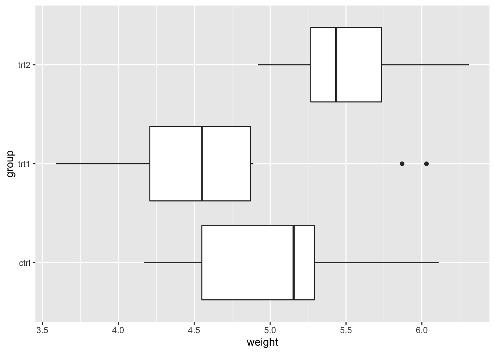
9.6.2.2 离散轴
9.6.2.2.1 改变条目的顺序
# 手动设定离散轴条目的顺序
bp + scale_x_discrete(limits = c("trt1", "trt2", "ctrl"))
## 逆转轴条目顺序 获取因子水平
flevels <- levels(PlantGrowth$group)
flevels
#> [1] "ctrl" "trt1" "trt2"
# 逆转顺序
flevels <- rev(flevels)
flevels
#> [1] "trt2" "trt1" "ctrl"
bp + scale_x_discrete(limits = flevels)
# 或者一行搞定
bp + scale_x_discrete(limits = rev(levels(PlantGrowth$group)))
9.6.2.2.2 设定标签
对于离散变量，标签来自于因子水平。然而，有时候短的因子水平名字并不适合展示。
bp + scale_x_discrete(breaks = c("ctrl", "trt1", "trt2"),
labels = c("Control", "Treat 1", "Treat 2"))# 隐藏 x 刻度、标签和网格线
bp + scale_x_discrete(breaks = NULL)
# 隐藏所有的刻度和标签（X 轴），保留网格线
bp + theme(axis.ticks = element_blank(), axis.text.x = element_blank())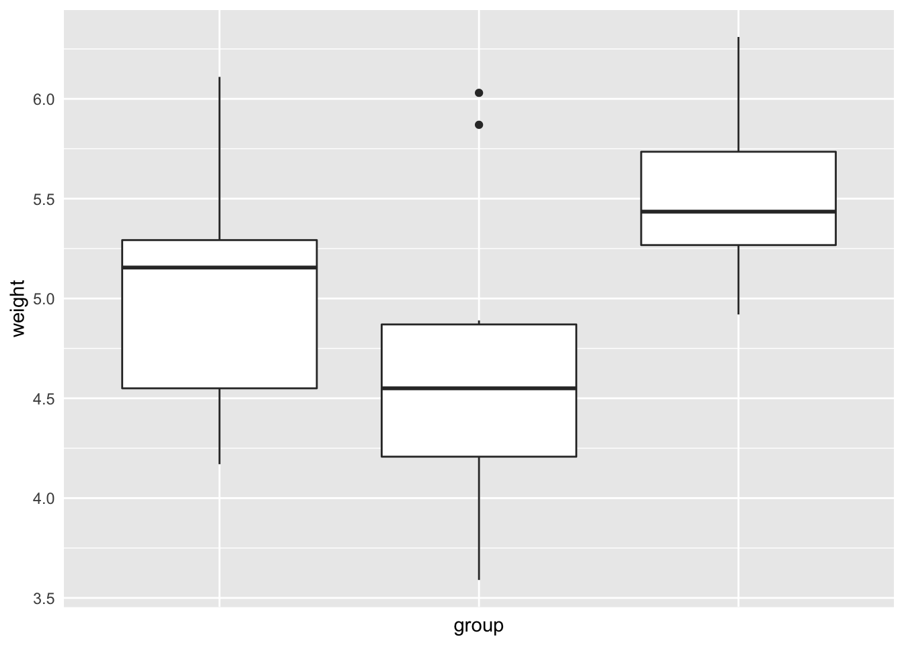
9.6.2.3 连续轴
9.6.2.3.1 设定范围和反转轴方向
如果你仅想简单地让轴包含某个值，可以使用 expand_limits()，它会进行拓展而不是拉伸。
# 确保 y 轴包含 0
bp + expand_limits(y = 0)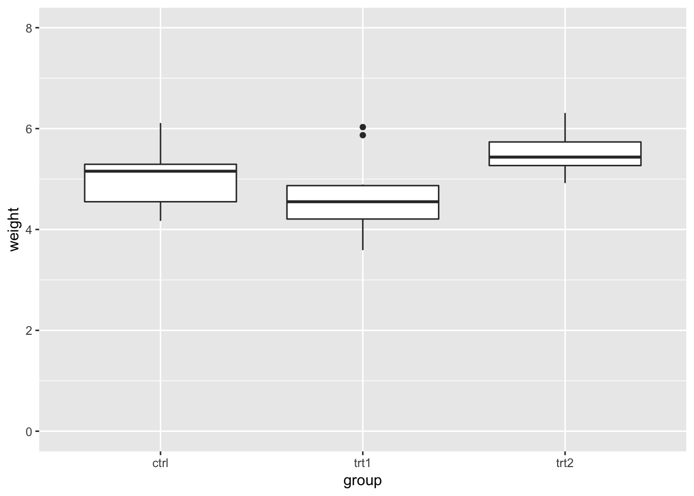
# 确保 y 轴包含 0 和 8
bp + expand_limits(y = c(0, 8))
当然你也可以通过 y 刻度显式地指定。注意如果使用任何 scale_y_continuous 命令，它会覆盖任何 ylim 命令，而且 ylim 会被忽略。
# 设定连续值轴的范围 下面是相同的操作
bp + ylim(0, 8)
# bp + scale_y_continuous(limits=c(0, 8))如果使用上述方法让 y 轴的范围变小，任何超出范围的数据都会被忽略。有时候这会产生一些问题，读者需要注意。
为了避免产生问题，你可以使用 coord_cartesian()，相比于设定轴的范围，它设定数据可视化的区域。
# 这两个操作一致，超出范围的数据被删除了，导致产生一个误导的箱线图
bp + ylim(5, 7.5)
#> Warning: Removed 13 rows containing non-finite values
#> (stat_boxplot).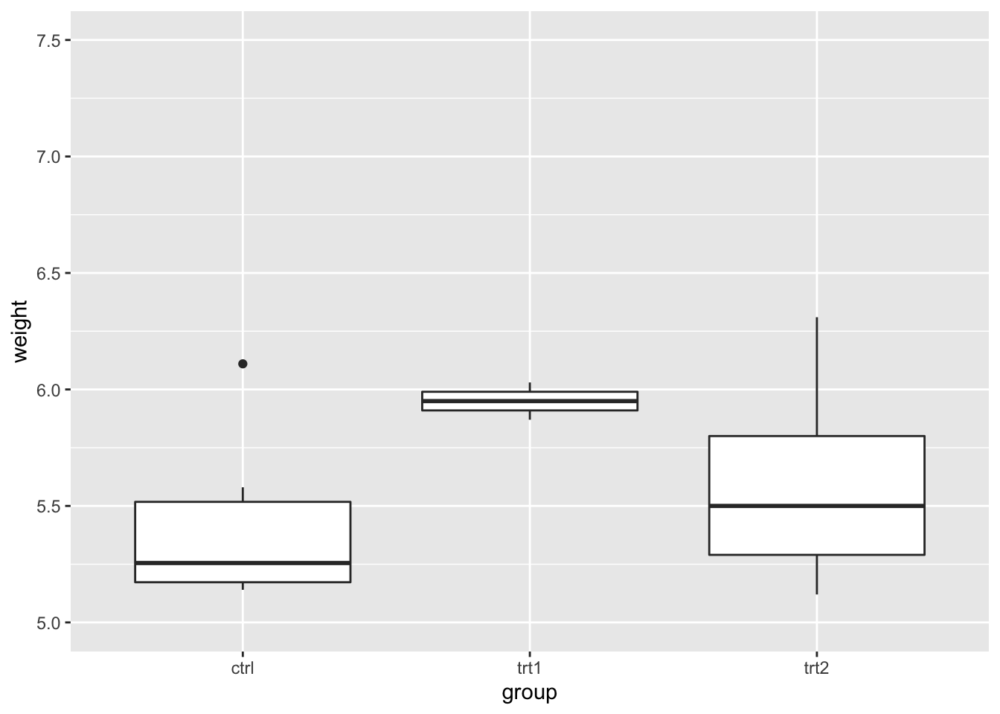
# bp + scale_y_continuous(limits=c(5, 7.5))
# 使用 coord_cartesian 'zooms' 区域
bp + coord_cartesian(ylim = c(5, 7.5))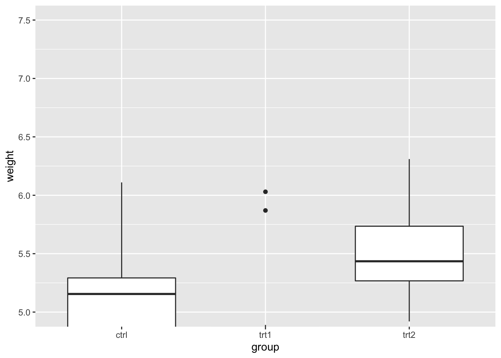
# 直接指定刻度
bp + coord_cartesian(ylim = c(5, 7.5)) + scale_y_continuous(breaks = seq(0,
10, 0.25)) # Ticks from 0-10, every .25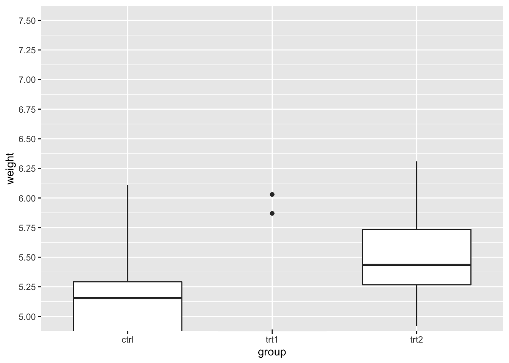
9.6.2.3.2 反转轴方向
# 反转一个连续值轴的方向
bp + scale_y_reverse()9.6.2.3.3 设置和隐藏刻度标记
# Setting the tick marks on an axis This will show
# tick marks on every 0.25 from 1 to 10 The scale will
# show only the ones that are within range (3.50-6.25
# in this case)
bp + scale_y_continuous(breaks = seq(1, 10, 1/4))
# 刻度不平等变化
bp + scale_y_continuous(breaks = c(4, 4.25, 4.5, 5, 6, 8))
# 抑制标签和网格线
bp + scale_y_continuous(breaks = NULL)
# Hide tick marks and labels (on Y axis), but keep the
# gridlines
bp + theme(axis.ticks = element_blank(), axis.text.y = element_blank())9.6.2.3.4 轴刻度 log、sqrt 等转换
默认轴是线性坐标，我们也可以将它转换为 log、幂、根等等。
有两种办法可以转换一个轴，一是使用 scale 进行转换，另外是使用 coordinate 进行转换。使用前者需要在先弄好刻度和轴的范围之前转换，而使用后者则相反，需要在弄好刻度和轴范围之后转换。这将产生不太一样的显示效果，如下所示。
# 创建指数分布数据
set.seed(201)
n <- 100
dat <- data.frame(xval = (1:n + rnorm(n, sd = 5))/20, yval = 2 *
2^((1:n + rnorm(n, sd = 5))/20))
# 创建常规的散点图
sp <- ggplot(dat, aes(xval, yval)) + geom_point()
sp
# log2 比例化（间隔相等）
library(scales) # 需要 scales 包
sp + scale_y_continuous(trans = log2_trans())
# log2 坐标转换，空间间隔不同
sp + coord_trans(y = "log2")
在标度转换中，我们还可以指定刻度值，让它们显示指数。
sp + scale_y_continuous(trans = log2_trans(), breaks = trans_breaks("log2",
function(x) 2^x), labels = trans_format("log2", math_format(2^.x)))
可以使用非常多的转换，参见 ?trans_new 查看所有可用转换的列表。如果你所需要的转换不在该列表上，可以自己写一个转换函数。
有一些非常便捷的函数：scale_y_log10() 和 scale_y_sqrt() （有对应的 x 版本）。
set.seed(205)
n <- 100
dat10 <- data.frame(xval = (1:n + rnorm(n, sd = 5))/20,
yval = 10 * 10^((1:n + rnorm(n, sd = 5))/20))
sp10 <- ggplot(dat10, aes(xval, yval)) + geom_point()
# log10
sp10 + scale_y_log10()
# log10 转换，并设定指数标签
sp10 + scale_y_log10(breaks = trans_breaks("log10", function(x) 10^x),
labels = trans_format("log10", math_format(10^.x)))9.6.2.3.5 x 与 y 轴固定的比例
设置 x 与 y 轴比例宽度也是可以的。
# x 范围 0-10, y 范围 0-30
set.seed(202)
dat <- data.frame(xval = runif(40, 0, 10), yval = runif(40,
0, 30))
sp <- ggplot(dat, aes(xval, yval)) + geom_point()
# 强制比例相等
sp + coord_fixed()
# 相等的标度变化，让 x 的 1 个单位等同 y 的 3 个单位
sp + coord_fixed(ratio = 1/3)9.6.2.4 轴标签和文字格式化
设置和隐藏轴标签：
bp + theme(axis.title.x = element_blank()) + # 移除 x 轴标签
ylab("Weight (Kg)") # 设置 y 轴标签
# 也可以通过标度设置
# 注意这里 x 轴标签的空间仍然保留
bp + scale_x_discrete(name="") +
scale_y_continuous(name="Weight (Kg)")改变字体、颜色、旋转刻度标签：
# 改变字体选项： X-axis label: bold, red, and 20
# points X-axis tick marks: rotate 90 degrees CCW,
# move to the left a bit (using vjust, since the
# labels are rotated), and 16 points
bp + theme(axis.title.x = element_text(face = "bold", colour = "#990000",
size = 20), axis.text.x = element_text(angle = 90, vjust = 0.5,
size = 16))9.6.2.5 刻度标签
你可能想将值显示为百分比、或美元、或科学计数法。这里可以使用格式器，它是一个可以改变文本的函数。
# 标签格式器
library(scales) # 需要 scales 包
bp + scale_y_continuous(labels = percent) + scale_x_discrete(labels = abbreviate) # 在这个例子中它没作用连续标度格式器有 comma、percent、dollar 以及 scientific。离散标度格式器有 abbreviate、date_format 等。
有时你需要自己创建格式化函数。下面的函数可以显示时间格式为 HH:MM:SS。
# 自定义时间格式化函数
timeHMS_formatter <- function(x) {
h <- floor(x/60)
m <- floor(x%%60)
s <- round(60 * (x%%1)) # Round to nearest second
lab <- sprintf("%02d:%02d:%02d", h, m, s) # Format the strings as HH:MM:SS
lab <- gsub("^00:", "", lab) # Remove leading 00: if present
lab <- gsub("^0", "", lab) # Remove leading 0 if present
}
bp + scale_y_continuous(label = timeHMS_formatter)9.6.2.6 隐藏网格线
隐藏网格线：
# 隐藏所有网格线
bp + theme(panel.grid.minor = element_blank(), panel.grid.major = element_blank())
# 仅隐藏次级网格线
bp + theme(panel.grid.minor = element_blank())
也可以仅隐藏水平或垂直网格线：
# 隐藏所有垂直网格线
bp + theme(panel.grid.minor.x = element_blank(), panel.grid.major.x = element_blank())# 隐藏所有水平网格线
bp + theme(panel.grid.minor.y = element_blank(), panel.grid.major.y = element_blank())
9.7 图例
9.7.1 问题
你想用 ggplot2 修改图表中的图例。
9.7.2 方案
从带有默认选项的示例图开始：
library(ggplot2)
bp <- ggplot(data = PlantGrowth, aes(x = group, y = weight,
fill = group)) + geom_boxplot()
bp9.7.2.1 去除图例
使用 guides(fill=FALSE), 用想要的颜色替代填充色.
你也可以用 theme() 移除图表中所有的图例。
# 删除特定美学的图例（填充）
bp + guides(fill = FALSE)
#> Warning: `guides(<scale> = FALSE)` is deprecated.
#> Please use `guides(<scale> = "none")` instead.
# 在指定比例时也可以这样做
bp + scale_fill_discrete(guide = FALSE)
#> Warning: It is deprecated to specify `guide = FALSE` to
#> remove a guide. Please use `guide = "none"` instead.
# 这将移除所有的图例
bp + theme(legend.position = "none")9.7.2.2 在图例中改变变量的顺序
这会将变量的顺序更改为 trt1，ctrl，trt2:
bp + scale_fill_discrete(breaks = c("trt1", "ctrl", "trt2"))根据指定颜色的方式，你可能必须使用不同的比例，如 scale_fill_manual(), scale_colour_hue(), scale_colour_manual(), scale_shape_discrete(), scale_linetype_discrete() 等。
9.7.2.3 反转图例中的条目顺序
反转图例顺序:
# 这两种方式等同:
bp + guides(fill = guide_legend(reverse = TRUE))bp + scale_fill_discrete(guide = guide_legend(reverse = TRUE))# 你也可以直接修改比例尺：
bp + scale_fill_discrete(breaks = rev(levels(PlantGrowth$group)))
你可以使用不同的比例尺，如 scale_fill_manual(), scale_colour_hue(), scale_colour_manual(), scale_shape_discrete(), scale_linetype_discrete() 等，而不是 scale_fill_discrete()。
9.7.2.4 隐藏图例标题
这将隐藏图例标题:
# 为了填充的图例移除标题
bp + guides(fill = guide_legend(title = NULL))
# 为了所有的图例移除标题
bp + theme(legend.title = element_blank())9.7.2.5 修改图例标题和标签的文字
有两种方法可以更改图例标题和标签。 第一种方法是告诉 scale 使用具有不同的标题和标签。 第二种方法是更改数据框，使因子具有所需的形式。
9.7.2.5.1 使用比例尺
图例可能由 fill, colour, linetype, shape 或其他因素所介导.
9.7.2.5.2 使用填充和颜色
因为图例中的变量 group 被映射到颜色 fill，所以必须使用 scale_fill_xxx，其中 xxx 是将 group 的每个因子级别映射到不同颜色的方法。 默认设置是在每个因子级别的色轮上使用不同的色调，但也可以手动指定每个级别的颜色。
bp + scale_fill_discrete(name = "Experimental\nCondition")bp + scale_fill_discrete(name = "Experimental\nCondition",
breaks = c("ctrl", "trt1", "trt2"), labels = c("Control",
"Treatment 1", "Treatment 2"))# 使用手动刻度而不是色调
bp + scale_fill_manual(values = c("#999999", "#E69F00",
"#56B4E9"), name = "Experimental\nCondition", breaks = c("ctrl",
"trt1", "trt2"), labels = c("Control", "Treatment 1",
"Treatment 2"))请注意，这并未更改 x 轴标签。 有关如何修改轴标签的信息，请参见坐标轴。
如果使用折线图，则可能需要使用 scale_colour_xxx() 或 scale_shape_xxx() 而不是 scale_fill_xxx()。 颜色映射到线条和点的颜色，而填充映射到区域填充的颜色。 形状映射到点的形状。
我们将在这里为线图使用不同的数据集，因为 PlantGrowth 数据集不适用于折线图。
# 一个不同的数据集
df1 <- data.frame(sex = factor(c("Female", "Female", "Male",
"Male")), time = factor(c("Lunch", "Dinner", "Lunch",
"Dinner"), levels = c("Lunch", "Dinner")), total_bill = c(13.53,
16.81, 16.24, 17.42))
# 基本的图表
lp <- ggplot(data = df1, aes(x = time, y = total_bill, group = sex,
shape = sex)) + geom_line() + geom_point()
lp
# 更改图例
lp + scale_shape_discrete(name = "Payer", breaks = c("Female",
"Male"), labels = c("Woman", "Man"))如果你同时使用 colour 和 shape，它们都需要给出比例规格。 否则会有两个独立的图例。
# 指定颜色和形状
lp1 <- ggplot(data = df1, aes(x = time, y = total_bill,
group = sex, shape = sex, colour = sex)) + geom_line() +
geom_point()
lp1
# 如果你仅仅指定颜色，将会发生
lp1 + scale_colour_discrete(name = "Payer", breaks = c("Female",
"Male"), labels = c("Woman", "Man"))
# 指定的颜色和形状
lp1 + scale_colour_discrete(name = "Payer", breaks = c("Female",
"Male"), labels = c("Woman", "Man")) + scale_shape_discrete(name = "Payer",
breaks = c("Female", "Male"), labels = c("Woman", "Man"))9.7.2.5.3 比例尺的种类
比例尺有很多种。 它们采用「scale_xxx_yyy」的形式。 以下是一些常用的 xxx 和 yyy 值：
| xxx | 描述 |
|---|---|
| colour | 线和点的颜色 |
| fill | 填充区域的颜色 (比如：柱状图) |
| 线条类型 | Solid/dashed/dotted lines |
| 形状 | 点的形状 |
| 大小 | Size of points |
| alpha | 不透明度/透明度 |
| yyy | 描述 |
|---|---|
| hue | 色轮的颜色相同 |
| manual | 手动指定的值（例如，颜色，点形状，线型） |
| gradient | 颜色渐变 |
| grey | Shades of grey |
| discrete | 不连续的值 (比如颜色，点的形状，线条类型，点的大小 |
| continuous | 连续的值（透明度，颜色，点的大小） |
9.7.2.6 更改数据框中的因子
更改图例标题和标签的另一种方法是直接修改数据框。
pg <- PlantGrowth # 把数据复制到新的数据框
# 重命名列中的列和值
levels(pg$group)[levels(pg$group) == "ctrl"] <- "Control"
levels(pg$group)[levels(pg$group) == "trt1"] <- "Treatment 1"
levels(pg$group)[levels(pg$group) == "trt2"] <- "Treatment 2"
names(pg)[names(pg) == "group"] <- "Experimental Condition"
# 查看最终结果的几行
head(pg)
#> weight Experimental Condition
#> 1 4.17 Control
#> 2 5.58 Control
#> 3 5.18 Control
#> 4 6.11 Control
#> 5 4.50 Control
#> 6 4.61 Control
# 画图
ggplot(data = pg, aes(x = `Experimental Condition`, y = weight,
fill = `Experimental Condition`)) + geom_boxplot()图例标题“实验条件”很长，如果它被分成两行可能看起来更好，但是这种方法效果不好，因为你必须在列的名称中加上一个换行符。另一种方法，有尺度，通常是更好的方法。
另请注意使用反引号而不是引号。由于变量名中的空格，它们是必需的。
9.7.2.7 修改图例标题和标签的外观
# 题目外观
bp + theme(legend.title = element_text(colour = "blue",
size = 16, face = "bold"))
# 标签外观
bp + theme(legend.text = element_text(colour = "blue", size = 16,
face = "bold"))9.7.2.8 修改图例框
默认情况下，图例周围没有框。 添加框并修改其属性:
bp + theme(legend.background = element_rect())bp + theme(legend.background = element_rect(fill = "gray90",
size = 0.5, linetype = "dotted"))9.7.2.9 改变图例位置
将图例位置放在绘图区域外（左/右/上/下）:
bp + theme(legend.position = "top")
也可以将图例定位在绘图区域内。 请注意，下面的数字位置是相对于整个区域的，包括标题和标签，而不仅仅是绘图区域。
# 将图例放在图表中，其中 x，y 为 0, 0（左下角）到 1,
# 1（右上角）
bp + theme(legend.position = c(0.5, 0.5))
# 设置图例的「锚点」（左下角为 0, 0; 右上角为 1, 1）
# 将图例框的左下角放在图的左下角
bp + theme(legend.justification = c(0, 0), legend.position = c(0,
0))
# 将图例框的右下角放在图表的右下角
bp + theme(legend.justification = c(1, 0), legend.position = c(1,
0))
9.7.2.10 隐藏在图例中的斜线
如果使用轮廓制作条形图（通过设置 color = “black”），它将通过图例中的颜色绘制斜线。 没有内置的方法来删除斜杠，但可以覆盖它们。
# 没有边缘线
ggplot(data = PlantGrowth, aes(x = group, fill = group)) +
geom_bar()
# 添加轮廓，但图例中会出现斜线
ggplot(data = PlantGrowth, aes(x = group, fill = group)) +
geom_bar(colour = "black")
# 隐藏斜线：首先绘制没有轮廓的条形图并添加图例,
# 然后用轮廓再次绘制条形图，但带有空白图例.
ggplot(data = PlantGrowth, aes(x = group, fill = group)) +
geom_bar() + geom_bar(colour = "black", show.legend = FALSE)
9.7.3 注意
更多信息，请阅读 ggplot2-图例属性。
9.8 线条
9.8.1 问题
你想要把线条加到图上。
9.8.2 方案
9.8.2.1 使用一个连续轴和一个分类轴
# 一些样本数据
dat <- read.table(header = TRUE, text = "
cond result
control 10
treatment 11.5
")
library(ggplot2)9.8.2.1.1 一条线段
这些使用 geom_hline()，因为y轴是连续的，但如果x轴是连续的，也可以使用 geom_vline()（带有 xintercept）。
# 基本柱状条
bp <- ggplot(dat, aes(x = cond, y = result)) + geom_bar(position = position_dodge(),
stat = "identity")
bp# 添加水平线
bp + geom_hline(aes(yintercept = 12))# 使线条变红并变为虚线
bp + geom_hline(aes(yintercept = 12), colour = "#990000",
linetype = "dashed")9.8.2.1.2 每个分类值的单独行
要为每个条形成单独的行，请使用 geom_errorbar()。
# 为每个条形绘制单独的线条。 首先添加另一列到目前为止
dat$hline <- c(9, 12)
dat
#> cond result hline
#> 1 control 10.0 9
#> 2 treatment 11.5 12
# 需要重新指定 bp，因为数据已经改变
bp <- ggplot(dat, aes(x = cond, y = result)) + geom_bar(position = position_dodge(),
stat = "identity")
# 为每个柱状图画分开的线条
bp + geom_errorbar(aes(ymax = hline, ymin = hline), colour = "#AA0000")
# 让线条更细一点
bp + geom_errorbar(width = 0.5, aes(ymax = hline, ymin = hline),
colour = "#AA0000")
# 即使我们从第二个数据框获得 hline
# 值，也可以得到相同的结果 使用 hline 定义数据框
dat_hlines <- data.frame(cond = c("control", "treatment"),
hline = c(9, 12))
dat_hlines
#> cond hline
#> 1 control 9
#> 2 treatment 12
# 柱状图形来自 dat，但是线条来自 dat_hlines
bp + geom_errorbar(data = dat_hlines, aes(y = NULL, ymax = hline,
ymin = hline), colour = "#AA0000")
9.8.2.1.3 分组栏上的线条
可以在分组条上添加线条。 在这个例子中，实际上有四行（hline 的每个条目一行），但它看起来像两个，因为它们是相互重叠的。 我不认为可以避免这种情况，但它不会导致任何问题。
dat <- read.table(header = TRUE, text = "
cond group result hline
control A 10 9
treatment A 11.5 12
control B 12 9
treatment B 14 12
")
dat
#> cond group result hline
#> 1 control A 10.0 9
#> 2 treatment A 11.5 12
#> 3 control B 12.0 9
#> 4 treatment B 14.0 12
# 定义基本柱状图
bp <- ggplot(dat, aes(x = cond, y = result, fill = group)) +
geom_bar(position = position_dodge(), stat = "identity")
bp
# 误差线相互绘制 - 有四个但看起来像两个
bp + geom_errorbar(aes(ymax = hline, ymin = hline), linetype = "dashed")9.8.2.2 各个组合柱状图上的线条
即使在分组时，也可以在每个单独的条上划线。
dat <- read.table(header = TRUE, text = "
cond group result hline
control A 10 11
treatment A 11.5 12
control B 12 12.5
treatment B 14 15
")
# 定义基本条形图
bp <- ggplot(dat, aes(x = cond, y = result, fill = group)) +
geom_bar(position = position_dodge(), stat = "identity")
bpbp + geom_errorbar(aes(ymax = hline, ymin = hline), linetype = "dashed",
position = position_dodge())9.8.2.3 有两个连续轴
样本数据如下：
dat <- read.table(header = TRUE, text = "
cond xval yval
control 11.5 10.8
control 9.3 12.9
control 8.0 9.9
control 11.5 10.1
control 8.6 8.3
control 9.9 9.5
control 8.8 8.7
control 11.7 10.1
control 9.7 9.3
control 9.8 12.0
treatment 10.4 10.6
treatment 12.1 8.6
treatment 11.2 11.0
treatment 10.0 8.8
treatment 12.9 9.5
treatment 9.1 10.0
treatment 13.4 9.6
treatment 11.6 9.8
treatment 11.5 9.8
treatment 12.0 10.6
")
library(ggplot2)9.8.2.3.1 基础线条
# 基本的散点图
sp <- ggplot(dat, aes(x = xval, y = yval, colour = cond)) +
geom_point()
# 添加一个水平线条
sp + geom_hline(aes(yintercept = 10))
# 添加红色虚线垂直线
sp + geom_hline(aes(yintercept = 10)) + geom_vline(aes(xintercept = 11.5),
colour = "#BB0000", linetype = "dashed")
9.8.2.3.2 画线为平均值
还可以按一些变量分组计算每个数据子集的平均值。 组别必须计算并存储在单独的列中，最简单的方法是使用 dplyr 包。请注意，该行的 y 范围由数据确定。
library(dplyr)
#>
#> 载入程辑包：'dplyr'
#> The following objects are masked from 'package:plyr':
#>
#> arrange, count, desc, failwith, id, mutate,
#> rename, summarise, summarize
#> The following object is masked from 'package:car':
#>
#> recode
#> The following objects are masked from 'package:stats':
#>
#> filter, lag
#> The following objects are masked from 'package:base':
#>
#> intersect, setdiff, setequal, union
lines <- dat %>%
group_by(cond) %>%
summarise(x = mean(xval), ymin = min(yval), ymax = max(yval))
# 为每组的平均 xval 添加彩色线条
sp <- sp + geom_hline(aes(yintercept = 10)) + geom_linerange(aes(x = x,
y = NULL, ymin = ymin, ymax = ymax), data = lines)
sp9.8.2.3.3 在分面使用线条
一般来说，如果你加一条线，它将出现在所有的分面上。
# 分面，基于cond
spf <- sp + facet_grid(. ~ cond)
spf# 用相同的值在所有的分面上画水平线
spf + geom_hline(aes(yintercept = 10))
如果你希望不同的线条出现在不同的方面，有两个选项。 一种是创建具有所需线条值的新数据框。 另一种选择（控制更有限）是在 geom_line() 中设定 stat 和 xintercept。
dat_vlines <- data.frame(cond = c("control", "treatment"),
xval = c(10, 11.5))
dat_vlines
#> cond xval
#> 1 control 10.0
#> 2 treatment 11.5
spf + geom_hline(aes(yintercept = 10)) + geom_vline(aes(xintercept = xval),
data = dat_vlines, colour = "#990000", linetype = "dashed")spf + geom_hline(aes(yintercept = 10)) + geom_linerange(aes(x = x,
y = NULL, ymin = ymin, ymax = ymax), data = lines)9.9 分面
9.9.1 问题
你想要根据一个或多个变量对数据进行分割并且绘制出该数据所有的子图。
9.9.2 方案
9.9.2.1 样本数据
以下例子将使用 reshape2 包中的 tips 数据集
library(reshape2)
# 查看头几行数据
head(tips)
#> total_bill tip sex smoker day time size
#> 1 16.99 1.01 Female No Sun Dinner 2
#> 2 10.34 1.66 Male No Sun Dinner 3
#> 3 21.01 3.50 Male No Sun Dinner 3
#> 4 23.68 3.31 Male No Sun Dinner 2
#> 5 24.59 3.61 Female No Sun Dinner 4
#> 6 25.29 4.71 Male No Sun Dinner 4根据小费 (tip) 占总账单 (total_bill) 的百分比绘制散点图
library(ggplot2)
sp <- ggplot(tips, aes(x = total_bill, y = tip/total_bill)) +
geom_point(shape = 1)
sp9.9.2.2 facet_grid
根据一个或多个变量对数据进行分割，生成的子图按照水平或垂直的方向进行排列。这一功能是通过赋予 facet_grid() 函数一个 vertical ~ horizontal 公式来实现的（这里所说的「公式」是 R 中的一种数据结构，而不是数学意义上的公式）。
# 根据 'sex' 按垂直方向分割
sp + facet_grid(sex ~ .)
# 根据 'sex' 按水平方向分割。
sp + facet_grid(. ~ sex)# 垂直方向以 'sex' 分割，水平方向以 'day' 分割。
sp + facet_grid(sex ~ day)9.9.2.3 facet_wrap
除了能够根据单个变量在水平或垂直方向上对图进行分面，facet_wrap() 函数可以通过设置特定的行数或列数，让子图排列到一起。此时每个图像的上方都会有标签。
# 以变量 `day` 进行水平分面，分面的行数为2。
sp + facet_wrap(~day, ncol = 2)
9.9.2.4 修改分面标签的外观
sp + facet_grid(sex ~ day) + theme(strip.text.x = element_text(size = 8,
angle = 75), strip.text.y = element_text(size = 12,
face = "bold"), strip.background = element_rect(colour = "red",
fill = "#CCCCFF"))
9.9.2.5 修改分面标签的文本
修改分面标签内容有两种方法。最简单的方法是为原来的名字匹配一个新的名字向量。例如，对数据中 sex 的类别进行重新定义 Female==>Women 和 Male==>Men：
labels <- c(Female = "Women", Male = "Men")
sp + facet_grid(. ~ sex, labeller = labeller(sex = labels))
另一个方法就是直接在数据框中修改，将你想要显示的标签赋值给相应的数据:
tips2 <- tips
levels(tips2$sex)[levels(tips2$sex) == "Female"] <- "Women"
levels(tips2$sex)[levels(tips2$sex) == "Male"] <- "Men"
head(tips2, 3)
#> total_bill tip sex smoker day time size
#> 1 16.99 1.01 Women No Sun Dinner 2
#> 2 10.34 1.66 Men No Sun Dinner 3
#> 3 21.01 3.50 Men No Sun Dinner 3
sp2 <- ggplot(tips2, aes(x = total_bill, y = tip/total_bill)) +
geom_point(shape = 1)
sp2 + facet_grid(. ~ sex)
两种方法都能得到相同的结果。
labeller() 可以通过设定不同的 函数 来处理输入的字符向量。比方说 Hmisc 包里的 capitalize 函数可以将字符串的首字母变成大写。我们也可以这样来自定义函数，如下所示，将字符串中的字母倒序：
# 对每个字符向量进行倒序：
reverse <- function(strings) {
strings <- strsplit(strings, "")
vapply(strings, function(x) {
paste(rev(x), collapse = "")
}, FUN.VALUE = character(1))
}
sp + facet_grid(. ~ sex, labeller = labeller(sex = reverse))
9.9.2.6 设置标度
一般而言，每幅图的坐标轴范围都是固定不变的，也就是说每幅图都拥有相同的尺寸和范围。你可以通过将 scales 设置为 free，free_x 或 free_y 来改变坐标轴范围。
# 描绘一个 total_bill 的柱状图
hp <- ggplot(tips, aes(x = total_bill)) + geom_histogram(binwidth = 2,
colour = "white")
# 根据性别和是否吸烟进行分面
hp + facet_grid(sex ~ smoker)# 在同样的情况下设定 scales='free_y' (y 轴自由标度）
hp + facet_grid(sex ~ smoker, scales = "free_y")# 画布的缩放比例不变，但各分面的范围有所改变，因此每个分面的物理大小都不一致
hp + facet_grid(sex ~ smoker, scales = "free", space = "free")9.10 多图
9.10.1 问题
你想把多个图形放到同一个页面中。
9.10.2 方案
最简单的方法就是使用 multiplot() 函数。
multiplot() 函数可以将任意数量的图像对象作为参数，或者可以构建一个图像对象列表传递到该函数的 plotlist 参数中。
# 多图功能 ggplot 对象可以直接放入 `…`
# 中，也可以传递到 `plotlist` 里（这里的 ggplot
# 对象以列表形式存在） - cols: 图像的列数 - layout:
# 用来指定布局的一组矩阵。当其存在时，可以忽略 `cols`
# 参数。 假设 layout 参数是 matrix(c(1,2,3,3), nrow=2,
# byrow = TRUE),
# 那么第一幅图像会位于左上方，第二幅图会在右上方，而
# 第三幅图会占据整个下方。
multiplot <- function(..., plotlist = NULL, file, cols = 1,
layout = NULL) {
library(grid)
# 从参数 `…`中建立一个列表然后 plotlist
plots <- c(list(...), plotlist)
numPlots = length(plots)
# 假如 layout 是 NULL, 那么可以用 `cols` 来定义布局
if (is.null(layout)) {
# 创建面板 ncol: 图像的列数 nrow:
# 根据上述给定的列数，计算所需要的行数
layout <- matrix(seq(1, cols * ceiling(numPlots/cols)),
ncol = cols, nrow = ceiling(numPlots/cols))
}
if (numPlots == 1) {
print(plots[[1]])
} else {
# 创建页面
grid.newpage()
pushViewport(viewport(layout = grid.layout(nrow(layout),
ncol(layout))))
# 让每一幅图像排列在正确的位置
for (i in 1:numPlots) {
# 获取包含这一子图所在区域的坐标 matrix i,j
matchidx <- as.data.frame(which(layout == i,
arr.ind = TRUE))
print(plots[[i]], vp = viewport(layout.pos.row = matchidx$row,
layout.pos.col = matchidx$col))
}
}
}如果它不能满足你的需求，你可以将其复制下来然后作出适当的修改。
首先，构建并保存图像但不需要对它们进行渲染，这些图像的细节并不重要。你只需要将这些图像对象储存为变量。
# 以下例子使用的是 ggplot2 包中自带的 Chickweight
# 数据集 第一幅图像
p1 <- ggplot(ChickWeight, aes(x = Time, y = weight, colour = Diet,
group = Chick)) + geom_line() + ggtitle("Growth curve for individual chicks")
# 第二幅图像
p2 <- ggplot(ChickWeight, aes(x = Time, y = weight, colour = Diet)) +
geom_point(alpha = 0.3) + geom_smooth(alpha = 0.2, size = 1) +
ggtitle("Fitted growth curve per diet")
# 第三幅图像
p3 <- ggplot(subset(ChickWeight, Time == 21), aes(x = weight,
colour = Diet)) + geom_density() + ggtitle("Final weight, by diet")
# 第四幅图像
p4 <- ggplot(subset(ChickWeight, Time == 21), aes(x = weight,
fill = Diet)) + geom_histogram(colour = "black", binwidth = 50) +
facet_grid(Diet ~ .) + ggtitle("Final weight, by diet") +
theme(legend.position = "none") #为了避免冗余，这里不添加图例这些图像都构建好了后，我们可以用 multiplot() 对它们进行渲染。下面将这些图形分成两列进行展示：
multiplot(p1, p2, p3, p4, cols = 2)
#> `geom_smooth()` using method = 'loess' and formula 'y ~ x'9.11 颜色
9.11.1 问题
你想在图表中用 ggplot2 添加颜色。
9.11.2 方案
在 ggplot2 中设置颜色，对相互区分不同变量会有些困难，因为这些颜色有一样的亮度，且对色盲者不太友好。一个比较好的通用解决方案是使用对色盲友好的颜色。
9.11.2.1 样本数据
这两个数据集将用来产生下面的图表：
# 两个变量
df <- read.table(header = TRUE, text = "
cond yval
A 2
B 2.5
C 1.6
")
# 三个变量
df2 <- read.table(header = TRUE, text = "
cond1 cond2 yval
A I 2
A J 2.5
A K 1.6
B I 2.2
B J 2.4
B K 1.2
C I 1.7
C J 2.3
C K 1.9
")9.11.2.2 简单的颜色设置
有颜色的线条和点可以直接用 colour = "red", 用颜色名称代替 "red"。填充的对象的颜色，如柱状条，可以用 fill="red" 来进行设置。
如果你想用任何其他非常规颜色，用十六进位码来设置颜色更容易，比如 #FF6699。
library(ggplot2)
# 设置：黑色柱状条
ggplot(df, aes(x=cond, y=yval)) + geom_bar(stat="identity")
# 柱状条外用红色边线
ggplot(df, aes(x=cond, y=yval)) + geom_bar(stat="identity", colour="#FF9999") 
# 红色填充，黑色边线
ggplot(df, aes(x=cond, y=yval)) + geom_bar(stat="identity", fill="#FF9999", colour="black")
# 标准黑色线条和点
ggplot(df, aes(x=cond, y=yval)) +
geom_line(aes(group=1)) +
geom_point(size=3)
# 蓝黑色线条，红色点
ggplot(df, aes(x=cond, y=yval)) +
geom_line(aes(group=1), colour="#000099") + # 蓝线
geom_point(size=3, colour="#CC0000") # 红点
9.11.2.3 将变量值映射到颜色
不用全局改变颜色，你可以将变量映射到颜色——换言之，通过把颜色放到 aes() 函数中，可以设置条件性变量。
# 柱状条: x 和填充都依赖于cond2
ggplot(df, aes(x=cond, y=yval, fill=cond)) + geom_bar(stat="identity")
# 其他数据集的柱状条；填充依赖于cond2
ggplot(df2, aes(x=cond1, y=yval)) +
geom_bar(aes(fill=cond2), # 填充依赖于cond2
stat="identity",
colour="black", # 所有都是黑色轮廓线
position=position_dodge()) # 把线条并排放置而非堆叠
# 线和点；颜色依赖于cond2
ggplot(df2, aes(x=cond1, y=yval)) +
geom_line(aes(colour=cond2, group=cond2)) + # 颜色分组都依赖于cond2
geom_point(aes(colour=cond2), # 颜色依赖于cond2
size=3) # 更大的点，不同的形状# 以上操作等价; 但把 "colour=cond2" 移到全局的映射用aes()
# ggplot(df2, aes(x=cond1, y=yval, colour=cond2)) +
# geom_line(aes(group=cond2)) +
# geom_point(size=3)9.11.2.4 对色盲友好的颜色
下面这些是对色盲友好的颜色色板，一个用灰色，一个用黑色：
/figure/unnamed-chunk-5-1.png)
/figure/unnamed-chunk-5-2.png)
为了用 ggplot2, 我们在一个变量里储存颜色色板，然后之后调用。
# 灰色的颜色色板:
cbPalette <- c("#999999", "#E69F00", "#56B4E9", "#009E73",
"#F0E442", "#0072B2", "#D55E00", "#CC79A7")
# 黑色的颜色色板k:
cbbPalette <- c("#000000", "#E69F00", "#56B4E9", "#009E73",
"#F0E442", "#0072B2", "#D55E00", "#CC79A7")
# 为了填充颜色，加
scale_fill_manual(values = cbPalette)
#> <ggproto object: Class ScaleDiscrete, Scale, gg>
#> aesthetics: fill
#> axis_order: function
#> break_info: function
#> break_positions: function
#> breaks: waiver
#> call: call
#> clone: function
#> dimension: function
#> drop: TRUE
#> expand: waiver
#> get_breaks: function
#> get_breaks_minor: function
#> get_labels: function
#> get_limits: function
#> guide: legend
#> is_discrete: function
#> is_empty: function
#> labels: waiver
#> limits: NULL
#> make_sec_title: function
#> make_title: function
#> map: function
#> map_df: function
#> n.breaks.cache: NULL
#> na.translate: TRUE
#> na.value: grey50
#> name: waiver
#> palette: function
#> palette.cache: NULL
#> position: left
#> range: <ggproto object: Class RangeDiscrete, Range, gg>
#> range: NULL
#> reset: function
#> train: function
#> super: <ggproto object: Class RangeDiscrete, Range, gg>
#> rescale: function
#> reset: function
#> scale_name: manual
#> train: function
#> train_df: function
#> transform: function
#> transform_df: function
#> super: <ggproto object: Class ScaleDiscrete, Scale, gg>
# 为了在点线中使用颜色，加
scale_colour_manual(values = cbPalette)
#> <ggproto object: Class ScaleDiscrete, Scale, gg>
#> aesthetics: colour
#> axis_order: function
#> break_info: function
#> break_positions: function
#> breaks: waiver
#> call: call
#> clone: function
#> dimension: function
#> drop: TRUE
#> expand: waiver
#> get_breaks: function
#> get_breaks_minor: function
#> get_labels: function
#> get_limits: function
#> guide: legend
#> is_discrete: function
#> is_empty: function
#> labels: waiver
#> limits: NULL
#> make_sec_title: function
#> make_title: function
#> map: function
#> map_df: function
#> n.breaks.cache: NULL
#> na.translate: TRUE
#> na.value: grey50
#> name: waiver
#> palette: function
#> palette.cache: NULL
#> position: left
#> range: <ggproto object: Class RangeDiscrete, Range, gg>
#> range: NULL
#> reset: function
#> train: function
#> super: <ggproto object: Class RangeDiscrete, Range, gg>
#> rescale: function
#> reset: function
#> scale_name: manual
#> train: function
#> train_df: function
#> transform: function
#> transform_df: function
#> super: <ggproto object: Class ScaleDiscrete, Scale, gg>这个颜色集来源于网站： http://jfly.iam.u-tokyo.ac.jp/color/。

图 9.1: 色盲友好调色板
9.11.2.5 颜色选择
默认情况下，离散比例的颜色围绕 HSL 色环均匀分布。例如，如果有两种颜色，那么它们将从圆圈上的相对点中选择; 如果有三种颜色，它们在色环上将相隔 120° 等等。用于不同级别的颜色如下所示：

图 9.2: 均匀色环
默认颜色选择使用 scale_fill_hue() 和 scale_colour_hue()。 例如，在以下情况下添加这些命令是多余的：
# 这两个是等价的; 默认使用scale_fill_hue()
ggplot(df, aes(x = cond, y = yval, fill = cond)) + geom_bar(stat = "identity")
# ggplot(df, aes(x=cond, y=yval, fill=cond)) +
# geom_bar(stat='identity') + scale_fill_hue()
# 这两个是等价的; 默认使用scale_colour_hue()
ggplot(df, aes(x = cond, y = yval, colour = cond)) + geom_point(size = 2)# ggplot(df, aes(x=cond, y=yval, colour=cond)) +
# geom_point(size=2) + scale_colour_hue()9.11.2.6 设置亮度和饱和度（色度）
虽然 scale_fill_hue() 和 scale_colour_hue() 在上面是多余的，但是当你想要改变默认值时，可以使用它们，比如改变亮度或色度。
# 使用 luminance = 45, 而不是默认 65
ggplot(df, aes(x = cond, y = yval, fill = cond)) + geom_bar(stat = "identity") +
scale_fill_hue(l = 40)
# 从 100 到 50 减少饱和度（亮度）, 增加亮度
ggplot(df, aes(x = cond, y = yval, fill = cond)) + geom_bar(stat = "identity") +
scale_fill_hue(c = 45, l = 80)
# 注意：使用 scale_colour_hue() 设置线和点亮度为 45 时的颜色图表:
/figure/unnamed-chunk-10-1.png)
9.11.2.7 调色板：Color Brewer
你还可以使用其他颜色标度，例如从 RColorBrewer 包中获取。 请参阅下面的 RColorBrewers 调色板图表。
ggplot(df, aes(x = cond, y = yval, fill = cond)) + geom_bar(stat = "identity") +
scale_fill_brewer()ggplot(df, aes(x = cond, y = yval, fill = cond)) + geom_bar(stat = "identity") +
scale_fill_brewer(palette = "Set1")ggplot(df, aes(x = cond, y = yval, fill = cond)) + geom_bar(stat = "identity") +
scale_fill_brewer(palette = "Spectral")
# 注意: 使用 scale_colour_brewer() 设置点和线条9.11.2.8 调色板：手动定义
最后，你可以使用 scale_fill_manual() 定义自己的颜色集。 有关选择特定颜色的帮助，请参阅下面的十六进制代码表。
ggplot(df, aes(x = cond, y = yval, fill = cond)) + geom_bar(stat = "identity") +
scale_fill_manual(values = c("red", "blue", "green"))
ggplot(df, aes(x = cond, y = yval, fill = cond)) + geom_bar(stat = "identity") +
scale_fill_manual(values = c("#CC6666", "#9999CC", "#66CC99"))# 注意：使用 scale_colour_manual() 设置线条和点9.11.2.9 连续颜色
# 产生一些数据
set.seed(133)
df <- data.frame(xval = rnorm(50), yval = rnorm(50))
# 依赖 yval设置颜色
ggplot(df, aes(x = xval, y = yval, colour = yval)) + geom_point()
# 使用不同的渐变
ggplot(df, aes(x = xval, y = yval, colour = yval)) + geom_point() +
scale_colour_gradientn(colours = rainbow(4))9.11.2.10 比色图表
9.11.2.11 十六进制色码图
颜色可以指定为十六进制 RGB 三元组合，例如 #0066CC。 前两位数字是红色，接下来的两位是绿色，最后两位是蓝色。 每个值的范围从 00 到 FF，以十六进制（base-16）表示，在 base-10 中等于 0 和 255。 例如，在下表中，#FFFFFF 为白色，#990000 为深红色。

图 9.3: 色码图
色码图来源于 http://www.visibone.com
9.11.2.12 RColorBrewer 调色板图表

图 9.4: 调色板图表